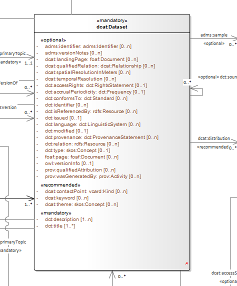

The SEMIC Style Guide for Semantic Engineers
- 1. Introduction
- 2. Terminological clarifications
- 2.1. What is a conceptual model?
- 2.2. What is an ontology?
- 2.3. What is a data shape specification?
- 2.4. What is a data specification document?
- 2.5. What is a data specification artefact?
- 2.6. What is a semantic data specification?
- 2.7. What is a Core Vocabulary (CV) specification?
- 2.8. What is an Application Profile (AP) specification?
- 3. Architectural clarifications
- 4. Clarifications on "reuse"
- 4.1. What is the reuse of an (ontology or data shape) specification?
- 4.2. Reuse of a class as-is
- 4.3. Reuse of a class with terminological adaptations
- 4.4. Reuse of a class with semantic adaptations
- 4.5. Reuse of a property as-is
- 4.6. Reuse of a property with terminological adaptations
- 4.7. Reuse of a property with semantic adaptations
- 5. General conventions
- 6. Conceptual model conventions (UML)
- 6.1. Conceptual model as single source of truth
- 6.2. Fixed UML interpretation
- 6.3. Element names and URIs
- 6.4. Case sensitivity and charset
- 6.5. Namespaces and prefixes in element names
- 6.6. Rich annotations through tags
- 6.7. Explicit depiction of external dependencies
- 6.8. Class inheritance
- 6.9. Abstract classes
- 6.10. Attribute definition and usage
- 6.11. Multiplicity of attributes and connectors
- 6.12. Connector definition and usage
- 6.13. All elements are "public"
- 6.14. Controlled lists as Enumerations
- 6.15. Partition the model into packages
- 6.16. Diagram readability
- 6.17. Element stereotypes
- 6.18. Datatype definition and usage
- 7. Semantic conventions
- 8. Data shape conventions
- 9. Methodology conventions
- 10. Publication conventions
- 11. Rule template
- 12. Terminology
- 13. References
1. Introduction
This document defines the style guide to be applied to the SEMIC’s semantic data specifications, notably to the eGovernment Core Vocabularies and Application Profiles. It provides rules on naming conventions, syntax, artefact management and organisation. It is meant to be complemented with technical artefacts and implementations that enable automatic conformance checking and transformation of conceptual models into formal semantic representations.
The content of these guides is part of the action to promote semantic interoperability amongst the EU Member States, with the objective of fostering the use of standards by, for example, offering guidelines and expert advice on semantic interoperability for public administrations.
1.1. Target audience
This style guide is intended primarily for semantic engineers, data architects and knowledge modelling specialists who are acting as editors or reusers of Core Vocabularies and Application Profiles.
This style guide may constitute a good source of information and explanations for the European Commission’s officers, collaborating consultants, and stakeholders involved in inter-institutional standardisation.
1.2. Scope
The main purpose of this style guide is to provide guidance and decision-making support for the creators, maintainers and publishers of the Core Vocabularies and Application Profiles. In the context of European Interoperability Framework (EIF) [eif] this style guide primarily addresses the Semantic Interoperability layer. The main part of this document is organised as a series of self-contained rules and guidelines.
In the scope of this document are included:
-
a terminological clarification for the significant SEMIC terms (including "reuse", "ontology", "Core Vocabulary", etc.);
-
an architecture overview, which interconnects various aspects and data specification types and how they are derived from a single conceptual model;
-
the concept of "reuse" in great detail and pinpoints exactly what is permitted and what is not permitted in the SEMIC context;
-
recommendations on organising the conceptual model, the semantic artefacts, and the data shapes;
-
some recommendations on the specification development methodology and some publication conventions.
It is considered out of the scope of this document to provide:
-
a complete and specific modelling methodology,
-
a procedure for maintenance and publication,
-
governance (roles, processes, responsibilities, etc.), lifecycle and release management methodology (including the initiation and change requests),
-
any specific implementation instructions,
-
indications as to what set of tools shall be adopted,
-
specifications related to data serialisation, formats or any syntax mapping methods (including syntax binding instructions to for example XSD/XML; or JSON-LD contexts),
-
usage instructions for the end users.
This style guide is recommended to be used in combination with complementary documents, among which we consider relevant, but not limited to, the following ones:
-
the user manual of a transformation tool from UML into other representations explaining what transformation rules are supported (i.e. implemented by the tool),
-
the documentation (manuals, handbooks, specifications) of the reused data specifications,
-
the governance and methodology documentation of the organisation developing the new semantic data specification, the adopted URI policy documentation, which can be inter-institutional policy or organisation specific one [10rules-puri].
1.3. How to read this document
This document is organised in two parts. The first part provides a brief context description and scope and offers an architectural overview. It introduces important terminological clarifications, the benefits of adopting the separation of concerns principle, and explanations of how it is played out in the SEMIC context.
The second part of the document provides a series of guidelines, conventions and assumption specifications. These guidelines are organised according to the aspects they cover. A guideline is a stand-alone description containing an indicative statement and a detailed description providing the rationale, benefits and limitations, implications and practical requirements, and eventually examples.
Users who may choose to bypass introductory details may decide to proceed with reading the general guidelines and the ones on the conceptual model first.
2. Terminological clarifications
Before detailed definitions and explanations are provided, let’s align on the idea that "semantic data specifications comprise artefacts".
-
There are semantic data specifications. They comprise nothing else but a collection of terms, structure and rule specifications on how to combine these terms and (RE)use expectations. In the SEMIC context, a semantic data specification can be either:
-
a Core Vocabulary, or
-
an Application Profile
-
-
There are Artefacts. They encode or indicate a representation format, attend a need or specific purpose, and address a clear concern. In the SEMIC context, we acknowledge, but not limited to, the following list of artefacts:
-
Persistent URIs
-
OWL 2 representation
-
SHACL representation
-
HTML representation
-
Pictures/Diagrams
-
UML representation
-
JSON-LD representation (+ JSON schema)
-
XML representation (+ XSD schema)
-
…
-
Note that not all artefacts are treated in the current style-guide, but only the ones that are in scope of the Semantic Interoperability layer of the European Interoperability Framework (EIF) [eif].
2.1. What is a conceptual model?
Definition
A conceptual model, also referred to as conceptual model specification, is an abstract representation of a system and comprises well-defined concepts, their qualities or attributes, and their relationships to other concepts. A system is a group of interacting or interrelated
elements that act according to a set of rules to form a unified whole.
Description
A conceptual model is a representation of a system that uses concepts to form said representation. A concept can be viewed as an idea or notion, a unit of thought [skos]. However, what constitutes a unit of thought is subjective, and this definition is meant to be suggestive rather than restrictive. That is why each concept needs to be well named by providing preferred and alternative labels and should have a clear and precise definition supported by examples and explanatory notes. The conceptual model comprises representations of concepts, their qualities or attributes and relationships to other concepts. Most commonly, these are association and generalisation relations.
In addition, the conceptual model can be materialised in a graphical representation facilitating knowledge elicitation, organisation and interaction with domain experts. This is relevant because interactions and discussions within a Working Group for a data specification are often driven by a graphical representation. However, the need for a conceptual model and a visual representation shall not be conflated. Thus, we keep clear separation of concerns, which is addressed in detailed in the next section [Separation of concerns in SEMIC].
There is no perfect candidate for representing the conceptual model. And, although not without limitations, risks for misunderstandings and mis-interpretations, we choose (a subset of) UML language [epo-cm2owl] as most appropriate and instrumental in addressing (a) the concern for having a conceptual model established and (b) the concern for providing a graphical representation. The UML appropriateness has been acknowledged based on a longstanding experience and practices. An entire section of this style guide is dedicated to (UML) conceptual model [see Conceptual model conventions].
The subset of the UML language considered in this style guide is comprised (but not limited to) in the following set of UML elements:
-
Class
-
Class Attribute
-
Connector
-
Association
-
Dependency
-
Generalisation
-
-
Enumeration
For visual representation only UML Class Diagrams are considered.
Note: UML will be the recommended language for defining the conceptual models until a better and more appropriate alternative with robust tool support is developed, that is also addressing the SEMIC methods and practices [see Architectural clarification].
2.2. What is an ontology?
Definition
An ontology, also referred to as ontology specification, is a a formal specification describing the concepts and relationships that can formally exist for an agent or a community of agents (e.g. domain experts) [gruber93]. It encompasses a representation, formal naming, and definition of the categories, properties, and relations between the concepts, data, and entities that substantiate one, many, or all domains of discourse [wiki-onto].
Description
The ontology constitutes the formal (machine-readable) definition of concepts. Although the languages for expressing ontologies vary in expressivity, we shall keep it light and simple, from the formal point of view, with minimal detail and level of expressivity [SC-R2]. Backer & Sutton explain well how lightweight semantics supports interoperability and reuse [baker15].
In the SEMIC context, we only consider lightweight ontologies [defined in rule SC-R2]. Therefore, even if this aspect is not emphasised as "lightweight ontology", it is implicitly meant even when simple "ontology" reference is used.
We assume that the ontology is expressed in OWL 2 language [SC-R1].
The main purpose of this component is to declare the classes, properties, datatypes and controlled lists. Each construct is established by assigning a URI and decorating it with human-readable labels and descriptions, and constitutes the mechanism to establish common references for humans and machines.
2.3. What is a data shape specification?
Definition
A data shape specification, also referred to as data shape constraint specification, or simply as data shape constraint or data shape, provides a set of conditions on top of an ontology, limiting how the ontology can be instantiated.
Description
The conditions and constraints that apply to a given ontology are provided as shapes and other constructs expressed in the form of an RDF graph.
We assume that the data shapes are expressed in SHACL language.
This document will refer to data shape constraint specifications simply as "data shapes", but occasionally also as "data shape constraints" or "data shape specifications".
2.4. What is a data specification document?
Definition
A data specification document, also referred to as specification document, is the human-readable representation of an ontology, a data shape, or a combination of both.
Description
A data specification document is created with the objective of making it simple for the end-user to understand (a)
how a model encodes knowledge of a particular domain, and (b) how this model can be technically adopted and used for a purpose.
It is to serve as technical documentation for anyone interested in using (e.g. adopting or extending) a semantic data specification (see [What is a semantic data specification?]).
We assume that the data specification documents are published in HTML format (optionally, others). See, for example, the Core Person specification
[cpv] or the CPSV-AP specification [cpsv-ap].
2.5. What is a data specification artefact?
Definition
A data specification artefact, often referred to as specification artefact or simply artefact, is a materialisation of a semantic data specification in a concrete representation that is appropriate for addressing
one or more concerns (e.g. use cases, requirements).
Description
In the SEMIC context, we consider the following artefact types as primary: ontologies, data shapes, and specification documents.
For a description of various concerns addressed in the SEMIC context, please see the section
[Separation of concerns in SEMIC].
Additionally, we are concerned with syntax bindings and serialisation formats (XML/XSD and JSON-LD in particular). Still, these are not in the scope of this document and are addressed elsewhere. For more, see section on [Data specification and artefact types].
2.6. What is a semantic data specification?
Definition
A semantic data specification , often called simply data specification, is a union of machine- and human-readable artefacts addressing clearly defined concerns, interoperability
scope and use-cases. A semantic data specification comprises at least an ontology and a data shape (or either of them individually)
accompanied by a human-readable data specification.
Description
One general categorisation of semantic data specifications is along the reuse axis.
Some semantic data specifications are built with the intent that the terms of the conceptual model can be used in as much as possible contexts. Typically, it is possible to use the terms independently of other each other. In this case, the definitions of the terms are usually very broad and abstract, and only the bare minimum of (usage) constraints are expressed. Often, the terms are presented as a list to the reader, with identifiers for each term in the same namespace. Those semantic data specifications are usually denoted with terms as such as vocabularies or terminology.
On the other side of the spectrum are the data specifications that precisely encode the semantics of the conceptual model that is being used in a single data exchange context implemented in software or API. They usually have a strong connection with technical data representations (see section on [Technical artefacts and concerns]) and documentations such as XSD schema, OpenAPI specifications, etc. Conceptual models for this purpose will contain precise constraints, technical datatypes, the code-lists that are being used, refer to implementation decisions, etc. Semantic data specifications that are created for that purpose are denoted with Implementation Models. As that name indicate, there objective is to encode the conceptual model of an implementation.
Between those two extremes, i.e. contextfree reuse (vocabularies) and unique usage context (Implementation Models), are semantic data specifications that aim to capture the conceptual model for a broad, yet well-defined, usage context. Typically, these data specifications do not intend to introduce new terms in the conceptual model, but will exploit terms from other semantic data specifications. These exploited terms are augmented with additional usage constraints making the terms more fit for purpose. These semantic data specifications are often denoted with terms such as Application Profiles or Profiles.
Readers should understand that the usage relationships between semantic data specifications form a complex network. An attempt to provide a structured view on this network is started in draft W3C Profile Guide [profile-guide]. Also, the Application Profiles need not necessarily to address all the technical needs related to an implemented system. Distinction between technical and semantic interoperability layers is attempted in this section.
This categorisation along the reuse axis indicates the importance to express the interoperability scope for semantic data specifications. However, as there are no commony agreed definitions for those categories, describing precisely the Dos and Don’ts for each category, people may associate different expectations to each category. This style guide is a document that defines for SEMIC the applied rules.
In the SEMIC context, two types of semantic data specifications are considered: [Core Vocabulary] and [Application Profile]. Occasionally, this document will refer to semantic data specifications shortly as "data specifications". Semantic data specifications of the third category, Implementation Models, are not part of the activities of SEMIC. Nevertheless, their existence, is taken into account when building the Core Vocabularies and Application Profiles.
With a similar meaning, the term "semantic asset" is used in the literature (e.g. ADMS [adms]). However, in our understanding, the term "semantic asset" is broader than "data specification" and includes controlled vocabularies and possibly other types of assets.
2.7. What is a Core Vocabulary (CV) specification?
Definition
A Core Vocabulary (CV) is a basic, reusable and extensible data specification that captures the fundamental characteristics of an
entity in a context-neutral fashion. Its main objective is to provide terms to be reused in the broadest possible context.
Broad context (on vocabularies)
On the Semantic Web, vocabularies define the concepts and relationships (also referred to as "terms") used to describe and represent
an area of concern. Vocabularies are used to classify the terms that can be used in a particular application, characterise possible
relationships, and define possible constraints on using those terms. In practice, vocabularies can be very complex (with several
thousands of terms) or very simple (describing one or two concepts only) [vocab].
There is no clear division between what is referred to as "vocabularies" and "ontologies". The trend is to use the word "ontology" for a more complex and possibly quite formal collection of terms, whereas "vocabulary" is used when such strict formalism is not necessarily used or used only in a very loose sense [vocab].
SEMIC context (on Core Vocabularies)
Formally, a Core Vocabulary encompasses a lightweight ontology, and, optionally, a (permissive) data shape specification, and it
is expressed in a condensed, comprehensive data specification document.
-
CV =
-
lightweight ontology +
-
(optionally) a (permissive) data shape
-
For more details see section on [Data specification and artefact types].
The qualifications lightweight and permissive are used to better emphasise the intention to be reused in the broadest possible context. More precise boundaries are defined further in this document.
NOTE: "Vocabularies", in general, are not the same as "controlled vocabularies", as they usually refer to SKOS artefacts. However, in other contexts (similar to SEMIC), a Core Vocabulary might often be simply denoted as "vocabulary".
2.8. What is an Application Profile (AP) specification?
Definition
An Application Profile is a data specification to facilitate the data exchange in a well-defined application context. It re-uses
concepts from one or more semantic data specifications, while adding more specificity, by identifying mandatory, recommended, and
optional elements, addressing particular application needs, and providing recommendations for controlled vocabularies to be used
[dcat-ap].
Description
An Application Profile (AP) is a data shape specification which addresses particular application needs (operating within some
domain or community) while providing semantic interoperability with other applications based on one or more shared ontologies
(vocabularies) [dc-ap].
Formally, the Application Profile encompasses (a) reused ontology specifications (one or many) and (b) its own data shape specification. Optionally it may include (c) reused data shape specifications (one or many), and (d) it may provide its own ontology specification to fill the ontological gaps.
-
AP =
-
reused lightweight ontology +
-
own data shape +
-
(optionally) reused (permissive) data shape +
-
(optionally) own ontology
-
SEMIC context
In SEMIC, Application Profiles encompass an ontology, which is largely composed of importing the reused ontologies, complemented
with an appropriate data shape specification. Terms that are introduced because of the Application Profile needs are, by preference,
added to existing Core Vocabularies. If this is not possible, an Application Profile-specific Vocabulary is created.
-
AP =
-
reused Core Vocabulary +
-
own data shape +
-
(optionally) own ontology
-
The data specification document of an Application Profile is elaborated. It will provide the application scope and context, and documents the ontology and the data shapes through the conceptual model. It also provides additional information that stimulates the adoption and correct usage of the AP in implementations.
3. Architectural clarifications
3.1. Consumer context
The consumers of SEMIC standards specification can be divided into three categories:
-
business users and domain experts,
-
technicians, software engineers, and software architects, the developers
-
software systems implementing the standards, the machines

The SEMIC goal is to bring these groups together, help them "speak the same language" and share meaning and conceptual references. Besides the very useful and much needed alignment of domains experts on what concepts mean, it is necessary to bridge the gap between domain experts and the technical experts who implement information systems. Then, the domain experts and business users shall interact with the information systems using the very same set of concepts, agnostic to and undistorted by the technology in the implementation process.
Standard semantic data specifications fulfil the purpose keeping these three groups in sync.
Ultimately, if the systems are based on standards the purpose is to build interoperable machines - machines interactions that share data whith each other and are able to operate on them seamlessly. The developers implement those machine interactions, and therefore the machines and developers must "find a common language". However, in order to ensure that the developers take the appropriate steps, the business/domain experts have to interact with them and convey their domain knowledge. This closes the loop: that the machine interactions correspond with the business/domain expert expectations.
The data specification shall address the following information needs: visual representation, textual description, machine interpretable representation, and optionally additional representations that facilitate and promote adoption.
3.2. Editorial context
The aim of this style guide is to ensure the creation of coherent data specifications that can be read and used by domain experts, developers and machines. It is mainly meant for the editors of the data specifications (e.g. semantic engineers, data architects, knowledge modelling specialists).

Such data specifications are primarily developed in collaboration with domain experts. To achieve synergy with the domain experts, graphical representation is an indispensable medium that facilitates knowledge elicitation, ideation and knowledge organisation. This becomes especially relevant when shared conceptualisation needs to be attained within a Working Group.
3.3. Separation of concerns and transformation
The successful application of an ontology or the development of an ontology-based system depends not merely on building a good ontology but also on fitting this into an appropriate development process and implementation into an information system.
Generally, computing information models suffer from the intertwining of two types of semantic concerns. As George Box said, "All models are wrong, but some are useful", and what a model is useful for depends on what concern it is primarily addressing. On the one hand, the model represents (purely) the domain; on the other hand, it represents the implemented system, which encompasses a representation of the domain (domain knowledge intertwined with technical specificities). These different representation requirements place different demands upon its structure [partridge13]. For example, the concept of "location" can be described by domain experts (in a domain model) in a way that is not isomorphic to how the "location" class may be appropriately modelled for an information system (i.e. captured in an Implementation Model).
One of the common ways to manage this problem is by separating concerns. We take inspiration from OMG’s Model Driven Architecture (MDA) [mda] which is a well-documented structure where a model is built for each concern, which is transformed into a different model for a different concern. This approach is adapted to the SEMIC needs.
Transformation deals with producing different models, viewpoints, or artefacts from a model based on a transformation pattern. In general, transformation can produce one representation from another or cross levels of abstraction or architectural layers [mda-guide].
3.4. Separation of concerns in SEMIC
The Core Vocabularies (CVs) and the specialised Application Profiles (APs) aim to address the following concerns:
-
Domain experts need to agree on the definitions of concepts, relations and their organisation to form a coherent domain model expressed with varying levels of details and expressivity [SC-R2], a shared conceptualisation.
-
This is addressed with conceptual models expressed in UML.
-
-
The shared conceptualisation needs to be explicitly represented in a usable format (i.e. operated on) by the machines.
-
This is addressed with lightweight ontologies expressed in OWL 2.
-
-
In practice, to achieve interoperability, it is necessary to provide a (minimum and necessary) set of constraints supporting the ontology instantiation.
-
This is addressed with data shapes expressed in SHACL.
-
-
To facilitate reuse and understanding, a specification shall be accessible to the community as clear, complete and well-articulated documentation.
-
This is addressed with data specification documents expressed in HTML.
-
In addition, when multiple artefacts addressing each concern are produced, keeping them in synch is a serious editorial and maintenance burden that needs to be considered.
3.5. Editorial synchronisation problem
On the editorial side the artefacts composing a data specification need to be kept in sync. A modification done in one shall pervade and propagate in all others. This is a difficult, tedious and expensive activity if such synchronisation is to be done manually.
Experience shows that using a pivot representation as a single source of truth is a viable solution. Such representation needs to be expressive enough to fulfill all the information needs of the derived artefacts.
3.6. Transformation of the conceptual model
UML conceptual models can be used as the single source of truth [CMC-R1]. This means it is sufficiently expressive to capture multiple modelling aspects/concerns simultaneously. The other artefacts are then fully or partially derived from the conceptual model.
With UML as the single source of truth, the update process is easier to perform as it only has to be done in a single place. The other representations are automatically derived from the conceptual model; the maintenance is less error-prone, uniform and easy [Transformation].
This approach facilitates consistent maintenance of semantic data specification interrelationship and solves the editorial synchronisation problem.
However, using UML is not enough, by itself, as the risk of ambiguity and multiple interpretations of the meaning of the UML model elements used in the conceptual model still exists. This risk is mitigated by adopting precise interpretation rules, such as the ones provided in this style guide [CMC-R2]. The different concerns that each data specification is trying to address might lead to different interpretations of the same UML constructs. Therefore, [CMC-R2] defines only a minimal set of such interpretation rules (that can be further extended, if necessary).
Additionally, UML cannot cover all potential needs specific to each derived representation. Therefore, the scope of this architecture is limited by what can be expressed in UML and how that information is utilised to generate formal statements. But from our experience it is sufficient to cover all the needs of establishing semantic interoperability standards.

Relations between the artefacts are depicted in the figure above. The conceptual model is the source from which a) the data shapes, b) the formal ontology and c) the data specification document can be generated. Each artefact in the figure is qualified with two terms, the representation standard and the most characteristic feature. The conceptual model is expressed in UML language and shall be conformant with the conventions provided in this style guide and the interpretation rules [CMC-R2]. The formal ontology is expressed in OWL 2 language and shall be lightweight as indicated in this convention [SC-R2]. The data shape is expressed in SHACL language and is characterised by the appropriate level of permissiveness [DSC-R2]. The documentation is represented in HTML format and the wording used shall be as precise as possible to capture the meaning accurately and clearly express the intention of the authors.

The figure above depicts that it is also possible to derive from the conceptual model additional artefacts, such as the XSD or JSON schemas and JSON-LD context definitions. These, however, are not addressed in this style guide.
One condition the conceptual model shall satisfy is that it shall comply with a set of pre-established conventions (general conventions and UML conventions) and have a fixed interpretation [CMC-R2].
The guidelines in this document enable and constrain the transformation process, making it precise enough to implement a toolchain that automatically performs conformance checking and necessary transformation operations. How this is done, however, is beyond the scope of this document, and the reader may refer to SEMIC toolchain [semic] or other similar implementations such as model2owl [model2owl] or OSLO toolchain [oslo-toolchain] projects.
3.7. Data specification and artefact types
For any given data specification, various concerns shall be addressed separately, each in a dedicated artefact type. Therefore, the CVs or APs shall be published as a set of artefacts, each addressing a specific concern. The union of these artefacts forms the intended semantic data specification [What is a semantic data specification?].
The table below summarises which artefacts shall be published for each type of data specification addressed in the SEMIC context.
Conceptual model (UML) |
Ontology (OWL 2) |
Data shape (SHACL) |
Specification document (HTML) |
Model diagram (PNG) |
|
Core Vocabulary |
Mandatory |
Mandatory |
Optional (shall be permissive) |
Mandatory |
Optional |
Application Profile |
Mandatory |
Optional (shall be an extension) |
Mandatory |
Mandatory |
Optional |
3.7.1. Artefact types
The semantic data specifications, both CVs and APs, are conceived as a union of specification artefacts, each addressing a different aspect/concern:
-
conceptual model expressed in UML
-
formal ontology expressed in OWL 2
-
data shapes expressed in SHACL
-
data specification document realised in HTML
-
conceptual model diagrams expressed in any image format (PNG, for example)
3.7.2. Data specification types
In the SEMIC context two types of data specifications are of main concern (a) Core Vocabularies designed with broad interoperability goals and (b) Application Profiles designed with application oriented interoperability goals.
In this document, we will refer to these data specification types to provide guideline refinements depicting variations based on the data specification type. The primary concern and the intention in each of them differ as follows:
-
Core Vocabularies aim at establishing the shared vocabulary as a lightweight ontology essentially, and optionally some data shapes if necessary [Core Vocabulary].
-
Application Profiles aim at setting carefully designed data shapes on reused concepts from one or several existent ontologies and, optionally, a minimal ontology with specialised vocabulary [Application Profile].
The secondary concerns are present and common in both data specification types and are, in fact, instrumental to consistent production, maintenance and publication:
-
Editing of the conceptual model
-
Production of data specification document
The data specification’s artefacts are not independent but tightly interrelated and transformed from one form into another one.
3.8. Technical artefacts and concerns
It is difficult to draw a clear line between semantic and technical interoperability artefacts and concerns. This section aims at providing some guidelines and hints on how to distinguish between the two (but no guidelines on technical artefacts are considered as this is out of scope of this work). The best way to look at them is in terms of concerns addressed within each layer, which resembles a lot the discussion on distinguishing "Conceptual Data Models", "Logical Data Models" and "Physical Data Models" in ANSI [ansi] from 1975.
EIF [eif] defines the technical interoperability as covering the applications and infrastructures linking systems and services. The concerns considered in this layer are related, but not limited, to:
-
interface specifications,
-
interconnection services,
-
data integration services,
-
data presentation and exchange,
-
secure communication protocols,
-
access boundaries,
-
information boundaries, etc.
The technical layer deals with how to represent, how to transmit data, how the data/entities are bundled when served by a service (i.e. API design or transmission, with impact on performance, usability, and interface), what are the access rights, how is the security ensured, access and storage performance, interfacing with the service, usability, etc.
EIF defines the semantic interoperability as ensuring that precise (format and) meaning of exchanged data and information is understood throughout exchanges between parties: "what is sent is what is understood". It covers two aspects: semantic and syntactic. The semantic aspect refers to the meaning of data elements and the relationship between them. The syntactic aspect refers to describing the exact format of the information to be exchanged in terms of grammar and format.
The concerns considered in this layer are related, but not limited, to developing vocabularies and define data meaning in exchanges. This layer is agnostic to access right, security, transmission protocol, physical representation, how it is presented to the user, etc.
In the SEMIC context, Semantic Web and Linked Data technology standards are chosen by default. This means that the syntactic aspect is covered by the RDF specifications [rdf], whereas the semantic aspect is addressed within the Core Vocabulary and Application Profile, expressed in OWL 2 [owl2] and SHACL [shacl] languages.
Connecting the semantic layer and the technical layers may not always be straightforward. Three types of technical artefacts are of a particular importance, which rely on three different technologies: XML and XSD, JSON and JSON schema, and relational databases. We briefly comment on each below.
RDF. In case the system is gnostic of Semantic Web technologies, if the implementation uses RDF natively, then the technical layer is (near) isomorphic to the semantic specification. There is a perfect alignment.
JSON. When system implementation is based on JSON representations, a mapping shall be provided to establish semantics-syntax alignment. Luckily, how such an alignment is done is already specified in the JSON-LD standard specification [json-ld]. It contains a canonical mapping algorithm. The syntaxt semantic binding is provided by the so-called context definitions.
As a consequence, if the JSON structure is ought to be aligned with the semantic specification, it imposes a strong constraint on how it shall be organised, otherwise the mapping is not possible. So, an advantage of JSON-LD is that the semantics gets coupled nicely with the syntax, and it is in the reach of the developer.
XML. When the system implementation is based on XML representation, then the interplay between syntax and semantics is more problematic, as there is NO canonical way os linking the two. The only transformation we have is the XSLT [xslt] but no mapping language exists like in the case of JSON-LD. Hence, if one provides a mapping to an XSD schema, then one must also provide the XSLT specification that interprets that mapping. Furthermore, when we want to establish an alignment between syntax and semantics there is no constraint on the structure (like in the case of JSON). It is only good practices and alternative technologies, such as RML, that we can rely on in this case. [rml].
RDB. If the implementation is based on relational databases, the story is similar to the XML. There is no organic way of mapping syntax and semantics. The mapping is at the level of the database schema, and there is no canonical way of doing this. So, just like in the case of XML we rely on good practices and alternative technologies to encode an interpretation, such as D2RML [d2rm] and RML [rml].
Ideally, syntax-binding artefacts that show how to map from a semantic data specification into technical layer artefacts is also provided as part of the specification. Showing how to interface with the semantic layer is especially important when Application Profiles (and Implementation Model specifications) are developed and published.
4. Clarifications on "reuse"
In the Semantic Web literature, the term "reuse" appears very often, encouraging the adoption of data specifications in new data specifications rather than redefining the same/similar concepts once again. The term "reuse" is usually considered in a broad sense, and what it means in terms of specific implementations is often left underspecified. In this section, we aim to address this gap and provide a detailed account of what "reuse" means in the SEMIC context.
4.1. What is the reuse of an (ontology or data shape) specification?
Specification reuse is the act of sourcing an established specification into a new one (referred to as the "current" or "own" specification).
Technically, reuse may mean either or both of the following:
-
Importing (using
owl:imports) the contents of another ontology or data shape specification into a current one; OR -
relying on URI dereferencing to get the formal definition of the ontology (this, however, does not work for the data shapes) In the SEMIC context, for the purpose of interoperability, we need to carefully constrain the meaning of the term "reuse" with a fine-grained description on a construct-by-construct basis, and this is the aim of the remainder of this section.
The following subsections offer a systematic description of six cases of reuse based on what is reused: (a) a class or (b) a property, and types of frequently encountered variations: (i) as-is, (ii) with terminological adaptations, and (iii) with semantic adaptations.
In each case, we describe as appropriate the implications on the following aspects:
-
How to denote it: (a) as-is or (b) as a specialisation
-
Label
-
Definition
-
Impact of adding new properties (for classes only)
-
Impact of reusing original properties (for classes only)
-
Impact on domain and range (for properties only)
-
Other constraints and additional information
4.2. Reuse of a class as-is
This scenario applies when the original class is reused without terminological or semantic changes.
Reuse Aspect |
Description |
How to denote |
Reuse as-is. Adopt the original URI and its definition. |
Label |
NO change allowed |
Definition |
NO change allowed |
New properties on the class |
In data shapes (SHACL), the class can be used for in domain/range property constraints. In UML, properties are depicted as new connections (object properties) that are incoming and outgoing to the class or as new attributes (datatype properties) that appear in the class. This works because OWL 2 semantics treats properties as first-class citizens (along with classes, datatypes and individuals). So even if the UML class diagram may visualise new properties on the class, they shall be read as constructs defined separately from one another, just as the OWL 2 specification defines it [owl2]. The properties on the superclasses of the reused class are considered inherited. When introducing new properties, do not duplicate existing ones in the superclass(es). Also, make sure there are no logical contradictions [CS-R5]. |
Original properties on the class as defined in the context of a data specification |
In OWL 2 & SHACL, when reusing a class as-is from an established ontology hereafter called the original, all properties and constraints associated with the class are considered adopted (even if some may be irrelevant). It is recommended to make the reuse of the original clear (by notes, hyperlinks or dereferenceable URIs of the terms) at the class level. In UML, all properties marked as mandatory in the original data specification are considered relevant and shall be depicted. Optional properties may be depicted only if relevant in the new context. The properties on the superclasses of the reused class are considered inherited and may be depicted in the UML diagram as necessary for reuse. |
4.3. Reuse of a class with terminological adaptations
This scenario applies when the original class is reused without semantic changes. Still, a label or definition needs to be modified to reflect the meaning in the new context accurately.
Reuse Aspect |
Description |
How to denote reuse |
Reuse as-is. Adopt the original URI and its definition. If the goal of the terminological adaptations is to rely on the specification as provided for the original URI, apply the guidelines of reuse as-is. Add, if necessary, a note to clarify this. Creating a sub-class that captures the adaptations is recommended as the safe option. |
Label |
Changes to the label are NOT recommended. Some exceptions may be accepted in the case of close synonyms, yet the meaning/semantics must stay the same. Differentiation through using preferred and alternative labels is a strong recommendation and should be implemented as described below. In UML, - the new label is indicated in the UML Element Name (in CamelCase, no spaces, to provide visibility for the User Community of the Model) - the (original) URI of the reused class shall be indicated (e.g. in a UML Element Tag) - the original label of the reused concept shall be preserved (e.g. in a UML Element Tag + a marker that special name management shall take place) In OWL 2,
- the original label is adopted as is (e.g. either In the documentation, - the new label displayed as the main label (in titles and any other fronting) - the original label (to be visibly mentioned) |
Definition |
NO change allowed Any scoping or nuancing provided in the original data specification should be copied.
In addition, new scoping or nuancing shall be provided in the scope notes (e.g. |
New properties on the class |
Same recommendation as for reusing the class as-is |
Original properties on the class |
Same recommendation as for reusing the class as-is |
Example
For example, the wording of FOAF definitions can benefit from light adaptations and adjustments, yet the meaning is not changing. Hence, in Core Person Vocabulary, the definitions are slightly adjusted. Such adaptations might be made when the original label or definition does not follow the guidelines laid out in this document. For example, the one on circular definitions [GC-R5].
4.4. Reuse of a class with semantic adaptations
This scenario applies when the original class is reused with semantic changes, which also implies terminological adaptations.
Reuse Aspect |
Description |
How to denote reuse |
Must reuse as a specialisation. Must create a subclass that captures the adaptations and indicate reuse by the subclass relationship. If the reused class is itself a specialisation of a third specification, then both shall be explicitly mentioned. In general, we shall show the whole reuse chain (in the conceptual model and especially in the documentation via notes and hyperlinks). |
Label |
Provide a new label that is more specific than the one in the reused class |
Definition |
Provide a new definition that is more specific than the reused class |
New properties on the class |
Add new properties as necessary on the new (owned) sub-class. The properties on the superclasses of the reused class are considered inherited. When introducing new properties, do not duplicate existing ones in the superclass(es). Make sure there are no logical contradictions [CS-R5]. |
Original properties on the class as defined in the context of a data specification |
When reusing a class as-is from a data specification, hereafter called the original, all properties and constraints associated with the class should be adopted. In UML, include all properties and constraints in the UML diagram if marked as mandatory in the original. For the sake of brevity, optional properties and constraints can be omitted. The properties on the superclasses of the reused class are considered inherited and may be depicted in the UML diagram as necessary for the purpose of reuse. If a reused original property must be made more specific or nuanced, then it is a good idea to create a sub-property of the already existing one. See property reuse recommendations below. |
Example
For example, in the Core Public Organisation Vocabulary, the reused class org:Organisation is specialised as
cv:PublicOrganisation.
4.5. Reuse of a property as-is
This scenario applies when the original property is reused without terminological or semantic changes.
Reuse Aspect |
Description |
How to denote reuse |
Property as-is. Adopt the original URI and its definition. |
Label |
NO change allowed |
Definition |
NO change allowed |
Domain and range |
If the reused property * does not define a domain and range (in the original ontology) AND * its definition does NOT mention explicit restrictions on the domain and range (in the data shape) then it can be attached in UML diagrams (in the owned data specification) to any class either as a) a relation (pointing to another class) or b) as an attribute with a specific datatype. If the reused property * defines a domain and range (in the original ontology) OR * its definition DOES mention explicit restrictions on the domain and range (in the data shape), then it must be reflected in the UML diagrams (in the owned data specification) accordingly, i.e. it can be applied only on specified classes. When UML is transformed into other representations, it is not recommended to represent the domain/range definitions in the lightweight ontology (OWL 2). Still, it may be reflected in data shape definitions (SHACL) as constraints. When the UML is transformed into other representations, the inclusion of domain/range statements is dependent on the "reuse" intention of the data specification. In case of a broad reuse intention, as for the SEMIC Core Vocs, it is not recommended to include them in the lightweight ontology but better reflect them as constraints in SHACL, where necessary (i.e. optional properties can stay free of domain/range specification) [CS-R2]. Note: in the case of narrow reuse intention, as for the application profiles, it is recommended to provide domain/range constraints in the data shape definitions (using SHACL) even if those are optional. |
Other constraints and additional information |
When reusing a property as-is from a data specification, then all constraints associated with the property should be adopted. It is recommended to make the reuse of the original clear (by notes, hyperlinks or dereferenceable URIs of the terms) at the class level. In no way should the UML contain conflicting constraints compared to the original data specification. When the UML is transformed into other representations, the lightweight ontology may be augmented with descriptive information, while (logical) constraints are to be expressed as SHACL. |
4.6. Reuse of a property with terminological adaptations
This scenario applies when the original property is reused without semantic changes. Still, a label or definition needs to be modified to reflect the meaning in the new context accurately.
Reuse Aspect |
Description |
How to denote the reuse |
Property as-is. Adopt the original URI and its definition. If the goal of the terminological adaptations is to rely on the specification as provided for the original URI, apply the guidelines of reuse as-is. Add, if necessary, a note to clarify this. Creating a sub-property that captures the adaptations is recommended as a safe option, however. If the reused property, is itself a specialisation of a third specification, then both shall be explicitly mentioned. In general, we shall show the whole reuse chain (in the conceptual model, and especially in the documentation via notes and hyperlinks). |
Label |
Changes to the label are NOT recommended. Some exceptions may be accepted in the case of close synonyms, yet the meaning/semantics MUST stay the same. We strongly recommend differentiating between preferred labels and alternative labels and should be implemented as described below. In UML, * the new label is indicated in the UML Element Name (in CamelCase, no spaces, to provide visibility for the User Community of the Model) * URI of the reused property shall be indicated (e.g. in a UML Element Tag) * the original label of the reused concept shall be indicated (e.g. in a UML Element Tag + a marker that special name management shall take place) In OWL 2, * original label (as is, either rdfs:label or * new label (as an alternative label, In the documentation, * original label (to be visibly mentioned) * new label (in titles and any other fronting) |
Definition |
Changes are NOT allowed. Any scoping or nuancing provided in the original data specification should be copied. In addition, new scoping or nuancing shall be provided in the scope notes (e.g., skos:scopeNote ). |
Domain and range |
Same recommendation as for reusing property, as is |
Other constraints and additional information |
Same recommendation as for reusing property, as is |
Example
For example, in DCAT-AP the reused property adms:status is relabeled from "status" to "change type" for Catalogue Record class. Note
that the diagram does not reflect this, but it is reflected in the associated documentation.

4.7. Reuse of a property with semantic adaptations
This scenario applies when the original property is reused with semantic changes, which also implies terminological adaptations.
Reuse Aspect |
Description |
How to denote the reuse |
Must create a sub-property that captures the adaptations. In UML, a connector is created denoting a new property, which specialises another connector denoting the original property. Additionally, notes or hyperlinks shall be provided to the original source. |
Label |
Provide a new label that is more specific than the one in the reused property |
Definition |
Provide a new definition that is more specific than the one of the reused property |
Domain and range |
If the reused super property does NOT define domain/range, then it is possible to add domain/range specifications to the sub-property, but only if justified and absolutely necessarily. In UML, feel free to attach it anywhere needed. If the reused super property DOES define a domain/range, DO not override them, i.e. do not specify a new domain/range that leads to logical inconsistencies. Specifically, if you do that, then make sure that the new Domain is a subclass of the Original Domain. If the property is used across multiple classes multiple domain/range specifications can be deemed appropriate. This shall be handled with care. Multiple domain/range definitions in OWL 2 mean intersection (i.e. joined by logical AND) and not the union (i.e. joined by logical OR), as most use cases may require. When the UML is transformed into other representations, the inclusion of domain/range statements is dependent on the "reuse" intention of the data specification. In case of a broad reuse intention, as for the SEMIC Core Vocabularies, it is not recommended to include them in the lightweight ontology but optionally reflect them as permissive constraints in SHACL. In case of narrow reuse intention, as for the Application Profiles, it is recommended to provide domain/range specifications in the data shape definitions even if those are optional. |
Other constraints and additional information |
Feel free to provide any additional information that is deemed necessary. When the UML is transformed into other representations, the lightweight ontology may be augmented with descriptive information, while (logical) constraints are to be expressed as SHACL. |
Example
For example, in the DCAT-AP the reused property dct:hasPart is specialised as dcat:dataset. Note that the subproperty
relation between the two is not depicted in the diagram, but is stated in the data shape specification.

5. General conventions
5.1. Reuse existing concepts as much as possible
Title: Reuse existing concepts as much as possible |
Identifier GC-R1 |
Statement: Reuse existing concepts as much as possible, respecting the original semantics and lexicalisation. |
Description:
Only use constructs with semantics (human and machine-readable) that support the use case or domain. A similar reflex must be considered by reusing properties and classes from other vocabularies. As a general rule, it is safe to reuse annotation properties, as they carry no logical semantics. Conversely, no concepts shall be redefined unless they are significant variations of the existent ones. In order to achieve a common approach to reuse, apply the reuse guidelines as specified above [Clarification on the reuse].
See more [epo-arch, section 4], [oslo-rules, sec 3.1.2]
5.2. Prefer maintained vocabularies
Title: Prefer maintained vocabularies |
Identifier GC-R2 |
Statement: Quality of maintenance and governance should be reviewed before reuse. Reuse mostly vocabularies that are well maintained and governed. [semic-sgdraft] |
Description:
Some projects are implemented and closed, while some other ones keep being maintained. The maintenance usually aims at (a) fixing errors, (b) making gradual improvements, and (c) supporting users in using the released data specification, to mention the least. Maintenance of the project can also include URI dereferencing and handling open issues in a timely fashion. Some projects may foresee an evolution roadmap, defined in a change and release policy, with a series of evolution stages planned.
5.3. Concept reference and terms
Title: Concept reference and terms |
Identifier GC-R3 |
Statement: Each concept shall be (a) referenceable by a URI, (b) formally defined and (c) described by a precise, unambiguous human-readable label and definition. |
Description:
Terms and concepts are not the same things. A term is a word, compound word, or multi-word expression that, in specific contexts, is given specific meanings – these may deviate from the meanings the same words have in other contexts and in everyday language. A concept can be viewed as an idea or notion, a unit of thought [skos]. However, what constitutes a unit of thought is subjective, and this definition is meant to be suggestive rather than restrictive. That is why each concept needs to be well-named (termed) by providing preferred and alternative labels and should have a clear and precise definition supported by examples and explanatory notes. So, we need a precise way to refer to concepts. The mechanism offering such a possibility is using URIs to establish the identity of a concept’s "meaning". URIs also enable referencing, an essential feature of meaning exchange (communication). Such a reference allows for establishing a common meaning, not only between humans and machines but also among humans. And finally, the meaning of the term must be clear. Its definition is associated with the term via the URI. To make the term reusable, it should be published as part of a data specification.
5.4. Vocabulary terminology style
Title: Vocabulary terminology style |
Identifier GC-R4 |
Statement: The terminology style shall be consistent across the vocabulary. |
Description:
In practice, some variation in terminology style (concept naming conventions) can be noticed across a wide range of semantic data specifications. Whatever the adopted style may be, the author shall consistently apply it to the whole model. These names will be reflected in all artefacts and in the URIs.
Next, we provide a set of loose recommendations:
-
British English is the lingua franca in the model. [epo-cmc, sec 3.1]
-
Avoid acronyms and abbreviations in concept names [epo-cmc, sec 3.1]
-
Classes are names with nouns and singular [epo-cmc, sec 3.6]
-
Names are case-sensitive. [epo-cmc, sec 3.1]
-
Relations and Properties use verbs at a present tense [epo-cmc, sec 3.7]
-
Some practices suggest adding the prefix "has" for quality attributes like "weight", "height", etc. or the prefix or "is" for boolean indicators, and some other practices recommend avoiding such prefixes as they add no additional information to the name.
-
-
Most often, the name of the inverse relation should not be a semantically inverted verb, such as in the case of "buys/sells" or "opens/closes". It should be done by changing the voice from active to passive, e.g. "plays/playedBy". [epo-cmc, sec 3.7]
5.5. Vocabulary definition styling
Title: Vocabulary definition styling |
Identifier GC-R5 |
Statement: The concept definitions shall be elaborated consistently across the vocabulary. |
Description:
In practice, different styles of defining concepts can be noticed across a range of semantic data specifications.
The SEMIC Principles for creating good definitions [semic-defs] are a basis for writing definitions. They are based on advice found in the literature and are the following:
-
Be concise but complete,
-
Avoid over-generalisations. Adapt and contextualise the definition to the surrounding/connected concepts.
-
Make sure that every concept that occurs in the model is directly (or indirectly) defined
-
-
Describe only one term
-
Structure the definition in a standardised way:
-
Use the singular form to phrase the definition [GC-R4]
-
No negative definition by stating what the term is, and not by enumerating what it is NOT,
-
Use only commonly understood abbreviations
-
Use similar terminology for related definitions
-
-
No circular definitions, i.e. the term it defines should not be part of the definition,
-
Secondary information such as additional explanation, scoping, examples, etc. are to be documented in usage notes.
-
The definition is formed of one or more sentences that starts with a capital letter and end with a period.
-
Do not start a definition with a repetition of the name of the concept. Rich standard encodings such as UTF-8 and UTF-16 are supported in notes and definitions. In the element names, however, we recommend avoiding any character encodings and using plain ASCII [epo-cmc, sec 4.2].
5.6. Reuse compliance
Title: Reuse compliance |
Identifier GC-R6 |
Statement: Compliance with a semantic data specification is satisfied by appropriate usage of terms that is in accordance with definitions and constraints. |
Compliance checking with an application semantic data specification shall be permissive. This means that what is not forbidden is permitted. When context requires more restrictions than this usually is a sign that an application profile needs to be established for a narrow(er) scenario.
Technically, we envisage compliance checking limited to correct referencing of the concept URIs and respecting the cardinality constraints and value constraints in the case of properties. This fall within the scope of data shape definitions. Additional, more specific compliance requirements and constraints can be added as necessary.
Compliance checking may involve multiple levels of severity. For example in the SHACL specifications three levels are defined: Violation, Warning, Info. We assume by default the SHACL severity specifications unless other denotations system are provided (i.e. different labels and delimitation of severity). Also in absense of specifications, any unfulfilled compliance check is considered a Violation.
The semantic data specifications may provide such severity levels. How it is realised in the conceptual model is open at the moment. The main place to provide such specifications is the data shape artefact. In the future we can return to this aspect and provide more guidance.
5.7. Deontic modals
Title: Deontic modals |
Identifier GC-R7 |
Statement: Indicators of deontic modalities for classes and properties do not have semantic or normative value. Still they may be used as editorial annotations. |
Deontic modalities indicate levels obligation, permission, necessity and related concepts.
As a general recommendation, to use deontic indicators in the semantic data specifications is discouraged. Such indicators may play an editorial or guiding role for the users and adopters of the data specifications but without any expectation that they are considered in any way for compliance validation or semantic interpretation of the data model.
In the standardisation community a common practice is to indicate levels of obligation or permission for concepts in a semantic data specification. Obligation indicator signals whether a statement using a class or a property is required in an instantiation; while, Permission indicator signals whether a statement using a class or a property is allowed or forbidden in an instantiation.
The common deontic indicator values are:
-
mandatory signifying that a statement using a class or property is required,
-
recommended signifying that a statement using a class or property is optional but recommended,
-
optional signifying that a statement using a class or property is optional,
-
forbidden signifying that a statement using a class or property is not permitted.
There are ways to achieve the same effect as the these indicators through other means, however.
For properties, the main instrument is employment of cardinality constraints (per property per class). To make a property mandatory set the minimum cardinality to one or more [1..*],
otherwise relax the minimum cardinality constraint to keep the property optional [0..*].
For classes, it is possible to mark a class as abstract, which means that it cannot be directly instantiated, therefore achieving the effect of forbidden. But for classes deontic indicators shall be avoided because a class may be mandatory and optional in different instantiation or exchange scenarios within the same application profile.
For example consider the DCAT-AP and two mandatory classes: dcat:Catalog and dcat:Dataset. When metadata of a catalogue (and its records) is exchanged, then both classes dcat:Catalog and dcat:Dataset must be instantiated; however when a single dataset metadata is being exchange then only dcat:Dataset instance shall be provided. Moreover, in the second scenario, providing an instance of dcat:Catalog will be counterproductive and possible leading to errors.
Descriptions of what classes can or shall be bundled together when participating in an information exchange belong in "data exchange contracts", "API endpoint scheme definitions" or the likes of these. Such specifications belong in the Technical Interoperability layer of the European Interoperability Framework (EIF) [eif], and are (currently) out of scope of this style guide, which aims primarily at addressing the semantic interoperability.
If semantic engineers are prefer or are compelled to employ deontic indicators, then they must be precisely defined and those definitions be published. No reliance on common sense understanding shall be assumed as the meaning of such deontic indicators may (and certainly) differ not only between readers of data specifications but also how they are meant in different data specifications.
6. Conceptual model conventions (UML)
6.1. Conceptual model as single source of truth
Title: Conceptual model as single source of truth |
Identifier CMC-R1 |
Statement The UML conceptual model should be used as single source of truth. |
Description
By applying this principle, we can achieve consistency among all derived artefacts.
This implies:
-
Standard representation of the UML, such as XMI
-
Existence of a well-defined set of rules and conventions to transform UML model into other artefacts, which can be executed, as much as possible automatically, by a dedicated software tool or toolchain [CMC-R2]
It is recommended that recent versions of the UML (v2.5+) and XMI (v2.5+) specifications are used [epo-cmc, sec 4.1].
6.2. Fixed UML interpretation
Title: Fixed UML interpretation |
Identifier CMC-R2 |
Statement: The UML conceptual model must have a fixed interpretation. |
Description:
Using UML as a graphical language to encode a data specification according to the reuse guidelines requires defining a set of pre-established conventions on the UML notation to reach a fixed interpretation.
The interpretation of UML as a logical structure, including OWL 2, was and still is an active research topic. But even the OMG Ontology Definition Metamodel [omg-onto] does not address the notion of reuse. The goal of using UML is to provide for the SEMIC semantic data specifications a standard graphical notation, which many are familiar with. Therefore, the graphical notation should facilitate the understanding of the data specification. The UML notation should match the semantics that are to be expressed in the data specification (the ontology, data shapes and human-readable documentation).
The UML is the single source of truth [CMC-R1]. Using the conventions and associated interpretation expressed in this rule, other artefacts are derived from the UML. The benefit of defining such a precise set of mapping rules is that it allows for:
-
Implementing tools to transform UML into derivative artefacts, thus enabling UML as the single source of truth.
-
Implementing tools for formal checking against the established conventions (interpretation), thus enforcing correctness, conformance and consistency.
These rules will increase the coherency of the UML diagrams across projects and organisations.
Within SEMIC, the interpretation is implemented by the SEMIC toolchain [semic].
The table below provides recommended interpretations of UML elements in OWL 2 and SHACL. These interpretations can be considered high-level mapping rules implementable into transformation tools that generate OWL 2 ontology and, respectively, SHACL constraints from the UML conceptual model.
UML model element |
OWL 2 ontology element |
SHACL data shape element |
Class |
OWL 2 Class |
SHACL Node Shape |
Abstract class |
SHACL Node Shape with a SPARQL constraint that selects all instances of this class |
|
Attribute |
OWL 2 datatype or object property, based on their type. |
Property constraint, within the SHACL Node Shape corresponding to the source UML class (but the constraints are mentioned below on type and multiplicity) |
Attribute type |
Property constraint, within the SHACL Node Shape corresponding to the UML class, indicating the range class or datatype. |
|
Attribute multiplicity |
Property constraint(s), within the SHACL Node |
|
Association (target/source role names) |
Object property declaration axiom for the target (or source, or both) end of the association. |
|
Association source |
Optional domain declaration (data shape constraints shall be preferred). |
Property constraint, within the SHACL Node Shape corresponding to the source UML class (but the constraints are mentioned below on target and multiplicity) |
Association target |
Optional property range declaration (data shape constraints shall be preferred). |
Property constraint, within the SHACL Node Shape corresponding to the source UML class, indicating the range class |
Association multiplicity |
Property constraints, within the SHACL Node Shape corresponding to the source UML class, indicating the minimum and/or maximum or exact cardinality (similar to Attribute multiplicity). |
|
Association symmetry |
SPARQL constraint, within the SHACL Node Shape, corresponding to the UML constraint, within the class, which selects instances connected by the object property in a reciprocal manner. |
|
Association inverse (for bidirectional associations only) |
Two object property declaration axioms, one for the target and the second for the source end of the association, and a declaration that the two properties stand in an inverse relationship to one another. |
|
Dependency |
Object property declaration axiom for the target end of the association. |
|
Dependency source |
Property constraint, within the SHACL Node Shape corresponding to the source UML class (but the constraints are mentioned below on target and multiplicity) |
|
Dependency target |
Property constraints, within the SHACL Node Shape corresponding to the source UML class, indicating (a) the range class is skos:Concept and (b) the value is skos:inScheme the target name (expected an enumeration). |
|
Dependency multiplicity |
Property constraints within the SHACL |
|
Class generalisation |
Subclass axiom between the classes corresponding to the UML classes. |
|
Property generalisation |
Sub-property axiom for the generalisation between UML associations and dependencies. |
6.3. Element names and URIs
Title: Element names and URIs |
Identifier CMC-R3 |
Statement: All UML Element names should be fit for URI generation with clear namespace organisation. |
Description:
This convention aims at ensuring that URIs can be generated from UML Element names and shall be treated as an extension to the terminology style conventions [GC-R4].
The Element names are intended as human-readable denominations (called labels) and as machine-readable denominations (called identifiers).
This means that the Element names
-
serve as the primary source for generating URIs [puri-bp] to ensure unambiguous machine-readable reference to a formal construct.
-
serve as the primary source for generating labels to ensure human readers' comprehension
-
follow an organisation of namespaces
Thus, in the UML model, the Element names must conform to RDF [rdf] and XML [xml] format specifications. Both languages effectively require that terms begin with an upper or lower case letter from the ASCII character set or an underscore (_). This tight restriction means that, for example, terms may not begin with a number, hyphen or accented character [cv-meth]. Although underscores are permitted, they are discouraged as they may be, in some cases, misread as spaces. A formal definition of these restrictions is given in the XML specification document [xml].
Note that, when the UML Element name cannot be used to effectively denominate and identify the concept then, UML Element Tags may be used to express explicitly URIs, labels, notes and other types of annotations [CMC-R6].
Internationalisation, if required, should be provided through the use of the UML Element Tags to specify labels that will be used for generation of specification documents in languages other than English. Country specific data specifications, which are meant to be used primarily at a national level, might decide to relax on this convention and permit the use of Unicode characters in the Element names, which will result in the generations of IRIs, instead of URIs [iri]. However, this is unnecessary, and strongly discouraged, in the SEMIC context.
Following this convention is also important in the context of generation of persistent URIs [PC-R2] according to the principles laid out in [10rules-puri].
Examples:
The class Address in Core Location has several properties. All the properties have a displayed name (e.g. "addressArea") with the UML class diagram and associated UML Tags, such as a label for the HTML specification ("address area"), definition, usage note and the related URI.

6.4. Case sensitivity and charset
Title: Case sensitivity and charset |
Identifier CMC-R4 |
Statement: All UML Element names are case-sensitive and shall follow the CamelCase convention. |
Description:
The names begin with an upper or lower case letter (A–Z, a–z) for all terms in the model. Digits (0–9) are allowed in the subsequent character positions. [epo-cmc, sec 4.2]
Moreover, we can significantly improve the readability of an ontology if we use consistent capitalisation for concept names; therefore, UML Element names shall be CamelCased [epo-cmc, sec 3.2], [oslo-rules, sec 3.2.20].
The names of
-
UML Classes and Datatypes shall start with an upper-case letter,
-
UML Enumerations and Packages shall start with a lower-case letter,
-
UML Attributes shall start with a lower-case letter,
-
UML Connectors (including Target Roles and Source Roles) shall start with a lower-case letter
6.5. Namespaces and prefixes in element names
Title: Namespaces and prefixes in element names |
Identifier CMC-R5 |
Statement: Element names shall be organised by namespaces. Namespaces may be indicated through prefixes delimited by colon (:) character, forming qualified names. |
Description:
To enable the reuse of names defined in other models and the reuse of unique references for names that support easy identification, namespace management must be considered. We adopt the XML and RDF approach to defining and managing namespaces [xml-ns].
A namespace is a set of symbols that are used to organise objects of various kinds so that these objects may be referred to by name and uniquely identifiable [urn].
A qualified name denotes the URI, which is composed of concatenating the expanded prefix with the local segment [turtle]. A qualified name is a name subject to namespace interpretation [xml-ns]. Syntactically, they are either prefixed names or unprefixed names. A binding declaration shall be maintained, which binds prefixes to namespace URIs and a default namespace applicable to unprefixed Element names.
As the Element name is the primary source for deriving URIs, a base URI and a local segment are necessary. The Element name prefix, before the colon, plays the role of namespace name indicating which base URI shall be used, while the Element name, after the colon, is the local segment. See [xml-ns] for more info.
In case the editor decides to omit to specify a prefix in the Element name when a URI generation logic is devised, an implicit prefix can be assumed by default. The qualified names may be structured as follows:
-
prefix:localSegment
-
:localSegment
-
localSegment
6.6. Rich annotations through tags
Title: Rich annotations through tags |
Identifier CMC-R6 |
Statement: UML Tags can be conveniently used for annotating the Elements. |
Description:
UML Element tags are key-value pairs that are associated with a UML Element (class, attribute, connector, etc.). The tags can be used as an extension mechanism to the UML language. They can be used to provide information that is not expressible anywhere else on a UML Element.
For example, in this style guide, we recommend that the UML Element name shall be used to derive both the concept URI and the concept preferred label. However, if the model editor chooses to use the UML Element name for deriving the concept label alone, then the URI needs to be specified elsewhere. This is one example of how the UML tags can be used: simply specify a new tag, "uri", and provide the concept URI as a value (see figure below).
Another example where tags came in handy is the provisioning of notes of various types. According to the UML standard, UML Elements have only one general description. We recommend using this description solely for definitions. Yet the scope notes, examples, alternative labels, and any other annotations can be provisioned through the UML tagging mechanism (see figure below).
6.7. Explicit depiction of external dependencies
Title: Explicit depiction of external dependencies |
Identifier CMC-R7 |
Statement: The UML diagrams should depict how the developed model relates to external (reused) models. |
Description:
UML does not support an import mechanism comparable to the one specified in OWL 2. Yet, the reuse of models is a highly encouraged practice. To accommodate such practice, the reused Elements shall be created as in the original model and depicted in diagrams.
The external Elements shall be clearly marked. The easiest way to do so is by providing a namespace prefix. The original meaning shall be preserved without changes to the labels, concept definitions or URIs.
Reused classes shall be depicted in the UML diagrams. Reused properties shall be depicted in diagrams as connectors and attributes. It is not necessary to depict unused classes or properties [oslo-rules, sec 3.1.7].
Examples:
In the example below, a Core Vocabulary Person includes concepts from another vocabulary (FOAF); thus the two classes Person and Agent have the "foaf" namespace prefix specified in front.

6.8. Class inheritance
Title: Class inheritance |
Identifier CMC-R8 |
Statement: Ensure that the attributes and associations of a superclass apply to all its subclasses. |
Description:
This is a general modelling principle that should be respected, yet when it comes to reusing, such a requirement is often overlooked. This means that the model editor shall carefully analyse the reused model as a whole and how it is integrated with their own model.
Examples:
In Core Public Organization, the class Public Organisation is a subclass of org:Organization from the Organization Ontology, and different properties/relations have been inherited such as hasSubOrganization, hasMember, hasUnit.

See more [oslo-rules, sec 3.2.3]
6.9. Abstract classes
Title: Abstract classes |
Identifier CMC-R9 |
Statement: Classes that are not intended for instantiation can be marked as abstract. |
Description:
When a (super-)class is created for capturing a level of abstraction in the domain knowledge, it may not always be suitable for instantiation. Editors may choose to mark such classes as abstract and to indicate that their subclasses shall be used in practice. In UML, this can be done via << abstract >> stereotype [see CMC-R17: Using stereotypes].
Doing so has no impact on the OWL 2 [owl2] representation of the model (as this cannot be expressed in OWL). However, depending on the toolchain implementation, SHACL data shapes [shacl] can be generated to express that no instances of this class shall not occur in the data.
See [oslo-rules, sec 3.2.6], [epo-cmc, sec 4.4]
6.10. Attribute definition and usage
Title: Attribute definition and usage |
Identifier CMC-R10 |
Statement: UML Attributes shall be used to define properties taking simple datatype values. An attribute declaration should specify its datatype and multiplicity whenever possible [CMC-R11]. |
Description:
We recommend atomic types are used as attribute types and avoid using another class as the attribute type. Instead, those should be expressed as relationships (represented by Association connectors) between the two classes [CMC-R12].
In case of primitive datatypes, high preference shall be given to using OWL 2 compliant XSD [xsd] and RDF [rdf] standard datatypes. For more detailed recommendations on the use of primitive datatypes see convention [CMC-R18].
Properties whose values come from a controlled vocabulary or authority table constitute a special case, because two modelling practices are recognised here: (a) as attributes with type “Code”, and (b) as dependency relations pointing to a UML Enumeration named after the controlled list.
In the first case, the attribute type "Code" shall be mapped to the skos:Concept class. The advantage of this approach is the compactness of the diagrams, as fewer boxes appear in them. The disadvantage is the omission to specify precisely, which list the property values are restricted to. Arguably, the controlled list can be provided via the additional UML Tags [CMC-R6], but that value will not be visible in the diagrams.
In the second case, the property is modelled not as an attribute but by using a UML Dependency connector between the UML Class, and the UML Enumeration representing the controlled list, oriented from the Class towards the Enumeration. It denotes that the OWL 2 class has an owl:ObjectProperty whose range is of type skos:Concept and is limited to values of the specified controlled vocabulary. The connector must have a "Source→Target" direction. No other directions are acceptable, and a valid target role name and multiplicity shall be provided [CMC-R14].
Finally, we emphasise that UML Connectors are reserved for the object properties only. Hence, none shall be established between a UML Class element and a UML Datatype element.
6.11. Multiplicity of attributes and connectors
Title: Multiplicity of attributes and connectors |
Identifier CMC-R11 |
Statement: The multiplicity of connectors and class attributes should be specified, indicating the minimum and maximum cardinality. The cardinality shall be as permissive as possible in Core Vocabularies and as restrictive as necessary in Application Profiles. |
Description:
If the UML model is developed to represent a Core Vocabulary, then the property cardinality (both UML Attributes and UML Association) shall be as permissive as possible, for example, [0..*], meaning any occurrence is allowed.
If a structural feature (attribute or association) is irrelevant for the domain or the applications, instead of setting a lower limit of multiplicity to 0, simply remove it from the model [oslo-rules, sec 3.2.15].
However, in the UML models representing Application Profiles, special attention shall be given to the multiplicity, reducing variation in the instance data to a minimum. And if a property (attribute or connector) is mandatory in the data, then its minimum cardinality shall be set to 1, for example [1..*] [epo-cmc, sec 4.5].
A good practice is to always indicate cardinality. It may be left unspecified, but this is not recommended. When in doubt, it is recommended to fall back on the implicit assumption of [0..*]. Not to be confused with the default cardinality assumed in tools. For example, Enterprise Architect by default assumes [1..1] cardinality for attributes and omits to display it; and a similar default assumption exists in XML/XSD.
Notation for multiple cardinality can be either with ‘*’ or ‘n’. In principle using either notation is fine, however, it is recommended to use only one of those notations within a given data specification consistently, if possible, to enhance readability. It is worth highlighting this, as some UML tools, by default, might use a different notation for multiple cardinality depending on whether it is specifying the cardinality of attributes vs. that of connectors. The UML processing tools should be implemented so as to handle either of those notations, as their meaning is identical.
Unless, well explained, no rigid constraints shall be imposed on attributes and associations. In other words, if specified, the cardinality shall be the most permissive, where possible [oslo-rules, sec 3.2.15].
Limit the constraints to business rules, do not add technical constraints to the model [oslo-rules, sec 3.2.16].
If an attribute or an association from a reused vocabulary is irrelevant, do not set the lower limit of multiplicity to 0, but simply omit it in the model [oslo-rules, sec 3.2.15].
Examples:
All Core Vocabularies have set a permissive cardinality [0..*], for example, all the properties of Public Organisation, on the left, have multiplicity [0..\*] while the same Public Organisation, in blue on right, reused in CPSV-AP has mandatory properties:

6.12. Connector definition and usage
Title: Connector definition and usage |
Identifier CMC-R12 |
Statement: UML Connectors shall be used to define relations and properties taking non-atomic type values. A connector declaration should specify multiplicity whenever possible [CMC-R11]. |
Description:
UML Connectors shall be used to denote object properties (see OWL 2 semantics, [owl2]).
First, explain how the connectors ought to be used, i.e., where to specify the relationship names and multiplicity. Then we explain the optional usage of the dependency connector type.
On connector names,
A generic UML connector may have a name applied to it, and it may have source/target roles specified in addition. This provides flexibility to how the domain knowledge may be expressed in UML; however, this freedom increases the level of ambiguity as well. Therefore, we foresee two distinct ways to express properties: using the connector (generic) name or using the connector source/target ends.
We strongly recommend using the source/target role name to indicate the relation name and leave empty the (generic) element name. So, if a target role is specified, then no connector name can be specified. Optionally a source role may be provided to indicate the inverse relation. In this case, the relation direction must be changed from "Source → Target" to "Bidirectional".
Or conversely, if the connector direction is "Bidirectional", then source and target roles must be provided. No other directions are permitted.
We recommend each association has a definition. The definition is then used for each role as they represent the same meaning manifested in the inverse direction. Alternatively, specific definitions can be specified along the target and source roles.
UML defined multiple types of connectors. We recommend relying mainly on the UML Association connector type. Optionally a UML Dependency Connector type may be used if the meaning and usage conditions are well-defined.
The UML Association connectors represent relations between a source and target classes. The association connector cannot be used between other kinds of UML Elements.
The UML Dependency connector may be used between UML Class and UML Enumeration boxes, oriented from the Class towards the Enumeration. It indicates the class has an owl:ObjectProperty, whose range is a controlled vocabulary
[CMC-R14]. The connector must have the direction "Source → Target".
No other directions are acceptable.
The UML Generalization connector signifies a class-subClass relation and is transformed into rdfs:subClassOf relation standing between a source and target classes. The connector must have no name or source/target roles specified in the UML model. If a model class should inherit a class from an external model, then proxies must be created for those classes
[GC-R1,
Reuse of a class with semantic adaptation].
For example, if Person specialises a foaf:Agent.
6.13. All elements are "public"
Title: All elements are "public" |
Identifier CMC-R13 |
Statement: The visibility of all UML Elements should be "public". |
Description:
For semantic data specifications, accessibility to the information is not a concern. The sole concern is to specify the semantics of the information as well as possible. Therefore, the UML access or privacy annotations shall not be interpreted, and the "+" symbol shall always be used next to each property. This symbol means "public" [oslo-rules, sec 3.2.22].
6.14. Controlled lists as Enumerations
Title: Controlled lists as Enumerations |
Identifier CMC-R14 |
Statement: The controlled lists of values shall be referred to as UML Enumerations and specified whenever possible. |
Description:
References to controlled lists shall be done via UML Enumeration elements. Content and lifecycle management of controlled lists shall be separated from the management of the semantic data specification.
Controlled lists play an essential role in establishing interoperability standards. Management and publication of controlled lists are not part of this style guide.
The expectation is that the controlled lists are published in accordance
with best practices and represented with the SKOS model using persistent identifiers. In such an approach, the controlled list is expressed as a skos:ConceptScheme and the specific values as skos:Concept(s). Also, such controlled lists are often developed,
published and maintained stand-alone following their own lifecycle, so that they can be reused in other models.
Two use-cases can be identified in practice: (a) when the code list is known and is explicitly referred to as the range of a property, and (b) when a property is modelled but no code list reference is provided as its range.
When the authors of a conceptual model intend to omit, which controlled list shall be used, then a class attribute with the range skos:Concept (in some cases Code is preferred) can be created to indicate that. This approach can be useful in situations when multiple (external) controlled lists can be used interchangeably. For example, the adms:status property of a dcat:CatalogueRecord shall be a skos:Concept, without specifying from which controlled list.
It is advisable, however, to be specific concerning which controlled list shall be used. In such cases, an Enumeration shall be created representing the controlled list. The Enumeration shall be empty, i.e., not specifying any value, because the values are assumed to be maintained externally and only the reference is necessary.
The properties taking this controlled list as range shall be depicted as UML connectors (dependencies or associations) between a Class and an Enumeration [CMC-R2]. For example, in ePO, dct:Location can have a country code represented as a dependency relation to at-voc:country (the country authority table published on the EU Vocabularies website).
The name of the Enumeration shall be resolved to a URI identical to that of the skos:ConceptScheme. As for the connector type we recommend using a dependency connector (depicted with a dashed line) because the semantic interpretation differs slightly from the association connector (depicted with a continuous line). Namely, the range of the property has to fulfil two constraints: (a) instantiating the skos:Concept class and (b) being skos:inScheme the intended controlled list [epo-arch].
If the controlled list is specific to the model then the author shall define the values of the UML Enumeration inside of it, which are interpreted as concepts belonging to the containing concept scheme [oslo-rules, sec 3.2.17].
Examples:
The COFOG controlled list is suggested in Core Public Organisation to describe the purpose of an Organisation, see in the image on top, while in CPSV-AP, the same COFOG list is used to indicate the functions of government which a public service is intended for, see in the image below.
While the COFOG controlled list, owned by the UN and maintained by the Publications Office in the form of SKOS concept schemes, the Core Public Organisation and CPSV-AP can still point to it independently.


6.15. Partition the model into packages
Title: Partition the model into packages |
Identifier CMC-R15 |
Statement: Packages have no semantic value, but shall be used whenever possible to logically organise the model. |
Description:
It is best to avoid defining any semantic interpretation into UML Packages. They are best used for organisational purposes, defining logical partitions in the model. So, packages can serve as a method for the slicing of the conceptual model into subdomains.
It is possible to use packages as namespace indicators. It works well for classes, but fails to cover the needs for managing namespaces of connectors and attributes. It does not work in cases when an attribute, or a connector is used multiple times in several packages. Namespace management is easier attained by using other methods such as using prefixes in Element names or using Element tags [epo-cmc, sec 4.3].
Examples:
In the image below, each class is organised in a package mapped to a namespace. However, for convenience, Core Vocabularies are in multiple packages but mapped to the same namespace.

6.16. Diagram readability
Title: Diagram readability |
Identifier CMC-R16 |
Statement: UML class diagrams shall be organised for readability. |
Description:
UML class diagrams are used for depicting the conceptual model. Their primary purpose is to construe the meaning of concepts, relations and their organisation to the human reader. Therefore, the diagrams shall be optimised for readability.
We recommend that the diagrams:
-
are well spaced (proper space between lines, boxes and labels)
-
minimise the number of crossing connectors [oslo-rules, sec 3.3.4]
-
prefer orthogonal to straight connectors [oslo-rules, sec 3.3.1]
-
align elements horizontally & vertically [oslo-rules, sec 3.3.4]
-
space elements evenly
-
avoid overlapping labels and depict all labels
-
align labels horizontally and avoid vertical or oblique alignment
-
place subclasses under or to the right of their parent [oslo-rules, sec 3.3.5] and
-
place the part under or to the right of the whole at aggregates or composites [oslo-rules, sec 3.3.1].
-
minimise the number of details, and are short and concise; multiple small(-er) diagrams are preferred to one large diagram
-
diagram size:
-
prefer a multiple themed small(er) diagrams to large and crowded ones
-
diagrams shall be no bigger than one A4 page
-
simplify complex diagrams [oslo-rules, sec 3.3.3]:
-
breaking it down into several smaller diagrams.
-
by highlighting certain parts of the diagram.
-
by hiding attributes, role names, etc. that are not relevant.
-
-
-
Symbol size equal, and nothing shall draw more attention unless intended. Make elements of equal importance equally large [oslo-rules, sec 3.3.2].
-
Inherited attributes of a superclass shall be visible if the superclass is not in the diagram [oslo-rules, sec 3.2.5].
See also [oslo-rules, sec 3.1.11], [semic-sgdraft, sec on UML, Rules 13-23]
Examples:
In the example below, taken from Core Person, the classes are aligned vertically and horizontally, subclasses are placed just below the related parent class, the relations are horizontal, vertical, or orthogonal.

6.17. Element stereotypes
Title: Element stereotypes |
Identifier CMC-R17 |
Statement: Stereotypes do not have semantic or normative value. They shall be avoided in the conceptual models unless a good motivation, and a strong need is provided. |
Description:
We strongly encourage semantic practitioners to void stereotypes of any normative or semantic value. One common usage of stereotypes is to provide deontic indicators. See [GC-7 on Deontic modals] where we explain why they are discouraged and what can be done instead.
There is a practice to mark some classes as "abstract" with intention of forbidding those from being instantiated. This is also a technical level constraint and does not belong in the semantic layer.
We acknowledge that stereotypes can be useful for editorial and dissemination purposes; to indicate a classification or grouping of a specific sort. Stereotypes can be used to support concerns specific to an implementation of the transformation toolchain. See the examples below.
Examples:
Stereotypes can be used to indicate what content goes into various output file during the transformation process.
Stereotypes can be used to visually group the class attributes. When applied on the relations (UMl connectors) stereotypes have the opposite effect: that of cluttering and decrease the diagram readability.

6.18. Datatype definition and usage
Title: Datatype definition and usage |
Identifier CMC-R18 |
Statement: We strongly recommend that only OWL 2 compliant datatypes are used. The creation of custom datatypes shall be avoided. |
Description:
Similar to [epo-cmc, sec 4.7], this convention draws the distinction between primitive (or atomic) types (consisting of single literal value) and composite types (consisting of multiple attributes) (see also [cv-handbook, sec 3.1]). In fact, the composite datatypes must be defined as classes and handled as such. For example, Amount, Identifier, Quantity and Measurement are to be treated as classes, even if conceptually they could be seen as composite datatypes.
It is recommended to employ the primitive datatypes that are already defined in XSD [xsd] and RDF [rdf], in particular a subset of those that is OWL 2 compliant. This should cover the standard, and most common types. Thus, definitions of custom datatypes shall be avoided unless the model really needs them. Such cases are, however, rare.
The datatypes defined in the UML model shall be also avoided. Even if a toolchain performing the transformation of UML can automatically resolve those into their XSD equivalent using a correspondence table, such as the one presented below.
Note that from the family of string datatypes we recommend using the following ones (in this order of preference): rdf:PlainLiteral, rdfs:Literal, xsd:string, and rdf:langString. Often enabling multilingual data specification is a necessity.
UML |
XSD |
Boolean |
xsd:boolean |
Float |
xsd:float |
Integer |
xsd:integer |
Character, String |
xsd:string / rdf:langString |
Short |
xsd:short |
Long |
xsd:long |
Decimal |
xsd:decimal |
Date |
xsd:date |
DateTime |
xsd:dateTime |
xsd:anyURI |
|
Code |
see CMC-R14 |
We strongly recommended the use of OWL 2 compliant XSD and RDF standard datatypes, if possible. They might be useful also for indicating a specific datatype, which is not possible with the UML ones. For example, making a distinction between a general string (xsd:string) and a literal with a language tag (rdf:langString), or XML encoded ones such as rdf:HTML and rdf:XMLLiteral.
The table above provides a simplified correspondence between UML and XSD datatypes, but for a complete list of available recommended datatypes the standard specifications shall be consulted:
7. Semantic conventions
7.1. Formal language choice
Title: Formal language choice |
Identifier SC-R1 |
Statement: The formal ontology shall be expressed in OWL 2. |
Description:
In the Semantic Web domain, two formal languages can be used for expressing the ontology: RDFS [rdfs] and OWL 2 [owl2]. RDFS is simpler and only allows for some of the recommended expressions (for example, the distinction between datatype and object properties is not possible). OWL 2 is more complex and more expressive than RDFS.
We recommend using only a limited set of expression types available in OWL 2 language [SC-R2].
7.2. Limited (OWL 2) expressivity
Title: Limited (OWL 2) expressivity |
Identifier SC-R2 |
Statement: The formal ontology shall be lightweight in its logical underpinning, focusing mainly on the concept declarations, generalisation axioms and annotations. |
Description:
OWL 2 language provides a high level of expressivity. In the SEMIC interoperability context, the primary purpose of semantic artefacts is to establish the common set of concepts and how they are employed in data exchange. For this purpose, simple OWL 2 constructs suffice. Therefore, the OWL 2 ontology shall be kept lightweight, and no advanced logical definitions are necessary, which would make the ontology heavyweight. The Bulletin of the Association for Information Science and Technology, dedicated an entire section on the charm of weak semantics in the linked data world. Backer & Sutton explain well how lightweight semantics supports interoperability and reuse [baker15].
We recommend the formal ontology definition be limited to the following types of expressions:
-
class declarations (
owl:Class,rdfs:Class) -
datatype property declarations (
owl:DatatypeProperty,rdf:Property) -
object property declarations (
owl:ObjectProperty,rdf:Property) -
subclass relations (
rdfs:subClassOf) -
subproperty relations (
rdfs:subPropertyOf) -
annotations
-
concept labels (
rdfs:label,skos:prefLabel,skos:altLabel) -
concept definitions (
rdfs:comment,skos:definition,skos:scopeNote) -
notes and comments (
rdfs:comment,skos:editorialNote,skos:changeNote,skos:historyNote,skos:example)
-
-
ontology header with
-
import statements (
owl:import) -
version metadata (
owl:versionInfo,owl:versionIRI) -
provenance metadata (e.g.
dct:issued,adms:status) -
descriptive metadata
-
The formal ontology shall not include other types of statements unless justified as necessary. The properties used, in particular those related to the ontology header, shall be aligned with the governance process.
No expressions of (a) property domain specification (rdfs:domain) and (b) property range specification (rdfs:range) shall be used unless justified as absolutely necessary. The need for setting property domain and range constraints shall be is better fulfilled by the data shapes expressed in SHACL language.
Keeping the ontology lightweight allows the maximum freedom for reuse and does not interfere with the validation concerns covered by the data shapes.
7.3. Lexicalisation
Title: Lexicalisation |
Identifier SC-R3 |
Statement: The choice in handling the lexicalisation of concepts shall be clearly defined and consistently implemented. |
Description:
The lexicalisation of concepts in semantic artefacts can be implemented in multiple ways. Two popular approaches are used in practice: RDFS or SKOS lexicalisation. However, other types can be considered as well (e.g. [lemon], [vann], etc.).
RDFS allows for a simple lexicalisation and annotation:
-
labels
-
rdfs:labelmay be used to provide a human-readable version of a resource’s name.
-
-
comments
-
rdfs:commentmay be used to provide a human-readable description of a resource.
-
SKOS offers a richer and more elaborate lexicalisation and annotation:
-
Lexical labels
-
skos:prefLabelandskos:altLabelare useful when generating or creating human-readable representations of a knowledge organisation system. These labels provide the strongest clues as to the meaning of a SKOS concept. -
skos:hiddenLabelhas a more technical nature and may be useful when a user is interacting with a knowledge organisation system via a text-based search function. The user may, for example, enter misspelled words when trying to find a relevant concept.
-
-
Documentation properties
-
skos:definitionsupplies a complete explanation of the intended meaning of a concept; -
skos:scopeNotesupplies some, possibly partial, information about the intended meaning of a concept, especially as an indication of how the use of a concept is limited in indexing practice; -
skos:noteuseful for general documentation purposes; -
skos:examplesupplies an example of the use of a concept; -
skos:historyNotedescribes significant changes to the meaning or the form of a concept; -
skos:changeNotedocuments fine-grained changes to a concept, for the purposes of administration and maintenance; -
skos:editorialNotesupplies information that is an aid to administrative housekeeping, such as reminders of editorial work still to be done, or warnings in the event that future editorial changes might be made.
-
We recommend one, or the other is used. Both can be used at the same time without any consequence of semantics, but this will introduce redundancy and possibly a maintenance burden.
7.4. Reasoning assumption
Title: Reasoning assumption |
Identifier SC-R4 |
Statement: No reasoning capabilities shall be assumed. |
Description:
OWL 2 constructs correspond to Description Logic (DL) concepts (direct semantics). Logic, besides expressing knowledge in a knowledge base, can be used to perform automated reasoning, i.e., inferring new knowledge based on premises and reasoning rules. The inference is also possible with RDF-based semantics, based on translating the axioms into directed graphs. The latter is used for SPARQL entailments and SHACL data shape rules.
Automated reasoning is not consistently available across environments: small differences in the usage context or reasoning patterns may lead to different outcomes.
Therefore, the editors of interoperable semantic data specifications are strongly recommended to NOT rely on such capabilities. Thus, in practice, the model shall allow for an explicit statement of the intended knowledge, and as little as possible shall be left implicit.
7.5. Circular definitions
Title: Circular definitions |
Identifier SC-R5 |
Statement: The data specification (semantic, conceptual, or shape) shall not use circular definitions. |
Description:
Circular definition, i.e., definitions that use the element they define are incorrect.
For instance, we say that an ontology element (a class, an object property or a datatype property) is circular when used in its own definition. This can occur in situations such as the following:
-
(a) the definition of a class as the enumeration of several classes including itself;
-
(b) the appearance of a class within its
owl:equivalentClassorrdfs:subClassOfaxioms; -
(c) the appearance of an object property in its
rdfs:domainorrdfs:rangedefinitions; or -
(d) the appearance of a datatype property in its
rdfs:domaindefinition.
8. Data shape conventions
8.1. Data shape language choice
Title: Data shape language choice |
Identifier DSC-R1 |
Statement: The data shapes shall be expressed in SHACL. |
Description:
8.2. Loose versus rigid constraints
Title: Loose versus rigid constraints |
Identifier DSC-R2 |
Statement: In a Core Vocabulary, then the data shape constraints shall be as loose as possible, i.e., permissive, while in an Application Profile, the data shape constraints shall be as rigid as necessary, i.e. restrictive. |
Description:
The Core Vocabularies are intended for a broad reuse and are concerned with establishing the concepts. This is addressed by the ontology artefact. Optionally it may be accompanied by a minimal set of data shape constraints expressing general domain limitations. For example, it may be already defined in the Core Vocabulary that a class cannot be instantiated without certain mandatory properties or that a declared property shall be used only with values from a pre-established controlled vocabulary. If a data shape artefact is provided, then any Application Profile reusing the Core Vocabulary shall not only import the ontology, but the data shapes as well.
The Application Profiles are usually intended for narrower use cases and mostly are concerned with setting restrictions on the way reused vocabulary ought to be used. It is a good practice to make such restrictions as restrictive as necessary but still provide space for variation as it typically occurs in practice. This is even more important when an Application Profile is conceived as reusable in other Application Profiles.
8.3. Open and Closed world assumptions
Title: Open and Closed world assumptions |
Identifier DSC-R3 |
Statement: The data instantiating a core model may be fragmented across information systems. For representation purposes, open-world assumptions shall be adopted, and for validation purposes, a closed-world assumption shall be adopted. |
Description:
Operations on the data, such as automated reasoning and validation, are impacted by what is assumed about its completeness. If it is considered complete, then we say that we operate under the closed-world assumption; otherwise, in the cases of continually evolving and distributed data (that is more in line with reality), the data is considered possibly incomplete, and we say that operating is under the open-world assumption.
Under the closed-world assumption, it is presumed that a true statement is also known to be true. Therefore, conversely, what is not currently known to be true, is false [reiter81]. The opposite of the closed-world assumption is the open-world assumption stating that lack of knowledge does not imply falsity. The truth value of a statement may be true despite whether or not it is known to be true.
This means that when validating, the data must be considered complete to assess whether it fulfils the imposed constraints or recommended shapes. Therefore, everything that is not known to be true must be considered false.
This may have an impact, especially for larger vocabularies (such as the eProcurement ontology), on how the data shapes are organised. As data shapes may be used to suggest how the data may be fragmented and how it shall not.
8.4. Shape definitions
Title: Shape definitions |
Identifier DSC-R4 |
Statement: Each ontology class shall be mirrored by a |
Description:
When generating SHACL shapes, it is a good practice to create a node shape for each UML class and, within it a property shape for each UML attribute and UML Connector of that class. If the property shapes are defined within the node shapes (rather than freestanding), then we mirror the structure depicted in the UML diagrams. Doing so is intuitive for the readers, the resulting constraint definitions are organically integrated, and the maintenance costs are decreased.
The shapes shall be created in a separate namespace in order to allow dereferencing to either OWL 2 or SHACL definitions.
In some communities, the URIs used in the OWL 2 specifications are reused in SHACL. The class definitions are extended as node shapes. In SHACL semantics, this is interpreted as an equivalent to specifying a sh:targetNode class. This approach allows the use of a single reference in both the ontology and data shape definition yet specifies separate concerns in separate artefacts. The advantage of the approach is increased consistency and readability while maintenance costs decrease. Yet, this approach does not allow for dereferencing separately OWL 2 or SHACL representations. Hence, it is recommended to avoid such practice.
8.5. Data shape severity
Title: Data shape severity |
Identifier DSC-R5 |
Statement: It is recommended to use constraint severity for distinguishing critical violations from non-critical recommendation warnings and from nice-to-have information. |
Description:
Data shapes can be assigned a level of severity. The specific values of severity have no impact on the validation but may be used by user interface tools to categorise validation results. The severity levels are:
-
Info - A non-critical constraint violation indicating an informative message.
-
Warning - A non-critical constraint violation indicating a warning.
-
Violation - A constraint violation.
9. Methodology conventions
9.1. Follow a methodology
Title: Follow a methodology |
Identifier MC-R1 |
Statement: It is strongly recommended that a clear, explicit methodology is adopted for the content development and lifecycle management of a semantic data specification. Conversely, no data specification shall be developed and managed without following a clear methodology. |
Description:
A methodology is a set of methods, processes, and practices that are repeatedly carried out to deliver projects (TOGAF [togaf]). It helps by using a clear set of processes for managing projects that everyone in the organisation understands, reducing risks, and improving the chances of success. A good methodology that fits the context and environment of an organisation can provide clear guidance on what, who, when, and how a project should be done. It also provides a clear path and a systematic strategy to solve the in-field problems.
We do not outline a concrete methodology here but merely point to the benefits of adopting and using one. In the SEMIC context, conceptual model development will benefit greatly from embracing some or a combination of techniques and frameworks in data modelling (e.g. Bottom-Up, Top-Down, Case-Based, Entity-Relationship, Object-Oriented, Star/Snowflake Schema data modelling techniques, etc.), ontology engineering methodologies (e.g. Methontology [fernandez-lopez97], DOGMA [jarrar08], OntoClean [guarino04], TOVE [fox92], DILIGENT [pinto04], NeOn [neon], etc. [sure09]), data management body of knowledge (DAMA-DMBOK [dama-dmbok]) or architecture frameworks and practices (e.g. TOGAF [togaf], Zachman Framework [zachman87], EAP [spewak06], etc.).
Among other benefits of adopting a clear and well-defined methodology are:
-
Clear lifecycle management
-
Connection between model and expressed (business) requirements
-
Implementation consistency
-
Proper business requirements management (specifications, use cases, scenarios, competency questions, etc. are collected, edited, maintained, referred by the concepts)
9.2. Scope and goals definition
Title: Scope and goals definition |
Identifier MC-R2 |
Statement: A semantic data specification shall have clear goals and a well-established scope definition. |
Description:
Establishing project scope ensures that the modelling work is focused and executed to expectations. It also helps define where the boundary of the model is and what shall be left out.
The clearer the scope the higher chances of success are.
It shall be possible to determine the scope of a data specification from the use cases for which it is drawn up. [oslo-rules, sec 3.1.4]
9.3. Modularisation
Title: Modularisation |
Identifier MC-R3 |
Statement: If a domain contains a lot of concepts that have to be modelled, then it is recommended to partition it into subdomains and manage them as connected modules. [oslo-rules, sec 3.1.3] |
Description:
Divide and conquer method works in many situations, including in the modelling realm. It may not be easy, however, to make a clearcut separation between concepts belonging to one module or another, and such an attempt will certainly bring clarity.
Sometimes, a concept can be used for several domains. Then it shall be placed in a separate module. [oslo-rules, sec 3.1.3]
The need for modularisation typically emerges when the to-be-modelled space grows. As the terms are to be identified by URIs [PC-R2], it is recommended to include in the used URI structure modularisation potential.
10. Publication conventions
10.1. 5-star Linked Open Data
Title: 5-star Linked Open Data |
Identifier PC-R1 |
Statement: Publishing the Core Vocabularies and Application Profiles shall be compliant with 5-star LOD criteria. |
Description:
Publishing a vocabulary as a Linked Open Data (LOD) resource means making it accessible, both human and machine-readable, in a standard way, thus supporting the semantic web. The publication as full LOD implies that the data is compliant with the highest grade of 5-Star [5star-od] open data evaluation:
-
The data is available on the Web under an open licence
-
The data is available following a clear structure
-
The data is available using a non-proprietary open format
-
The data uses URIs to denote concepts
-
The data is linked to other resources to provide context
See more [semic-sgdraft, dwdp]
10.2. Persistent URI policy
Title: Persistent URI policy |
Identifier PC-R2 |
Statement: The URIs that are used to identify the terms modelled in the data specifications should be dereferenceable Persistent URIs [10rules-puri] and comply with a URI policy (or URI strategy). URIs that are well-defined according to such criteria are often denoted as PURIs [10rules-puri]. SEMIC adheres to the EU persistent URI policy. Each SEMIC URI is dereferenceable in both machine representation (RDF artefacts) and human-readable (HTML artefact). |
Description:
When publishing data on the web [dwdp], it is crucial to have a structured and persistent system of URIs in place. Such URIs make it easy for the users to understand the vocabulary structure and retrieve information as they expect.
The 10 rules for Persistent URIs [10rules-puri] are base principles for the design of quality identifiers. Regarding URI design, the main consideration of creators should be that when a URI is created, all its parts should be resistant to change. For instance, locations and organisation names can change and therefore should not be used in URIs. First and foremost, when introducing semantics in URIs, the strings used need to reflect what the resources are (i.e. intrinsic characteristics such as the type or nature), not who owns them or where they are [uri-dp].
In 2014, the ISA Programme devised a common policy for managing persistent HTTP-based URIs of EU institutions [uri-dp, 10rules-puri, puri-gov-eu]. That has led to an EU wide URI resolution service, prescribing that each URI is of the following pattern:
The {Collection} is an organisation-agnostic name for a collection of terms. Within a {Collection} the local names, or
references, are being maintained according to the policy of the {Collection}. For SEMIC data specifications, the names
are dependent on the naming conventions mentioned in this style guide rules [GC-R4 + CMC-R3].
10.3. Version management
Title: Version management |
Identifier PC-R3 |
Statement: A consistent version management shall be implemented for the vocabulary evolution respecting the "semantic versioning" principles. [sem-ver] |
Description:
The SEMIC versioning methodology is based on "semantic versioning" principles and implements a simple set of rules and requirements that dictate how version numbers are assigned and incremented. It involves describing clearly and precisely what is being published and which features are included, and what the limitations are, setting the expectations and scope. Once the artefacts are identified for the public, the changes to the data specifications are communicated with specific increments to the version number and with associated change notes.
The version format is X.Y.Z (Major.Minor.Patch).
As a rule of thumb, bug fixes do not affect the artefact and increment the Patch version. Backwards compatible artefact additions/changes increment the Minor version. And, backwards-incompatible artefact changes increment the Major version.
Examples:
For example, evolving from version 1.3.5 to 1.3.6 represents a backwards-compatible patch, from 1.3.5 to 1.4.0, a backwards-compatible new development, while switching from 1.3.5 to 2.0.0 breaks the backwards compatibility.

10.4. Artefact versioning
Title: Artefact versioning |
Identifier PC-R4 |
Statement: The vocabularies and Application Profiles shall be versioned as a whole and never to atomic elements (concepts, relations or constraints). |
Description:
Create a new version with each publication. Using the semantic version principles to determine the exact version number depends on whether it is a major, minor or patch update.
The version shall be assigned to the entire vocabulary or Application Profile and never to elements in the model
(concepts, relations, constraints, etc.) [oslo-rules, sec 3.1.6]. The version shall be saved as the model metadata
(for example, in the owl:Ontology header).
No version information shall be embedded into any artefact URIs unless it is a version URI provided via owl:versionIRI.
10.5. URI dereferencing
Title: URI dereferencing |
Identifier PC-R5 |
Statement: Any URI identifiable resource devised in a data specification shall be dereferenceable. |
Description:
Dereferencing means that one can use the URI as an URL to retrieve related information back. The format and representation in which the information is returned depend on content negotiation. Content negotiation is the interaction between the client application and the server in which the client informs the server about its preferred format and representation and the server responds with the best-fitting result it can provide.
It is recommended to provide (format) content negotiation for HTTP which is based on the interpretation of the HTTP header Accept.
The dereferencing shall be provided for both human-readable and machine-readable formats. A human-aimed HTML representation is the default response (if no content type is specified), and the other is RDF [10rules-puri].
The HTML representation should have landing points based on the used fragment identifier. The other representations/formats. Further technical details can be found in "Best Practice Recipes for Publishing RDF Vocabularies" [rdf-pub].
10.6. Human-readable form
Title: Human-readable form |
Identifier PC-R6 |
Statement: Each artefact shall have a corresponding human-readable form representing the model documentation. |
Description:
The documentation content shall follow a standard template for consistent formatting and content structuring.
It is a good practice to provide the following sections in the document:
-
Preamble with metadata indicating
-
Title
-
Abstract
-
Date of publication/release
-
Version information
-
Authors, editors, contributors
-
Licensing information
-
-
Introduction describing the
-
Background information
-
Context & Scope
-
Intended audience
-
UML diagrams of the model
-
-
Description of each element in the model grouped by element type (e.g. class, property, constraint, controlled vocabulary). Each element shall be described by its URI and its Lexicalisation:
-
URI (shall be clearly visible)
-
Labels (preferred and alternative)
-
Definitions, scope notes, examples, editorial notes, etc.
-
The content of these fields shall be aligned as much as possible with the metadata published in the OWL 2 representation (see [SC-R2]).
11. Rule template
Title: Short reference to the rule |
Identifier The acronym used to reference the rule in this document. |
Statement: Each rule should be stated in a simple sentence. |
Description:
Optionally, a rule may have a more elaborate description of how to apply, when to apply it, why it is useful, and what is its scope.
Or it can be optionally answering questions such as:
-
What is the rationale? Why is the rule useful?
-
What are the benefits of applying this rule?
-
What are the constraints or limitations?
-
What implications does this rule have in practice (e.g. requirements for applying)?
-
When to apply it?
-
How to apply it?
-
To what exceptions to pay attention?
The description should be 1-2 paragraphs at most.
12. Terminology
12.1. Common terms and acronyms
-
XMI [http://www.omg.org/spec/XMI/]
-
The XML Metadata Interchange (XMI) is an Object Management Group (OMG) standard for exchanging metadata information via Extensible Markup Language (XML). [https://en.wikipedia.org/wiki/XML_Metadata_Interchange]
-
-
UML [http://www.omg.org/spec/UML/]
-
The Unified Modeling Language (UML) is a general-purpose, developmental modeling language in the field of software engineering that is intended to provide a standard way to visualize the design of a system. [https://en.wikipedia.org/wiki/Unified_Modeling_Language]
-
-
OWL 2 [https://www.w3.org/OWL/]
-
The W3C Web Ontology Language (OWL 2) is a Semantic Web language designed to represent rich and complex knowledge about things, groups of things, and relations between things. [https://www.w3.org/TR/owl2-syntax/]
-
-
RDF [https://www.w3.org/RDF/]
-
Resource Description Framework (RDF) is a World Wide Web Consortium (W3C) standard originally designed as a data model for metadata. It has come to be used as a general method for description and exchange of graph data. [https://en.wikipedia.org/wiki/Resource_Description_Framework]
-
-
RDFS [https://www.w3.org/TR/rdf-schema/]
-
RDF Schema provides a data-modelling vocabulary for RDF data. RDF Schema is an extension of the basic RDF vocabulary. [https://www.w3.org/TR/rdf-schema/]
-
-
XML [https://www.w3.org/XML/]
-
Extensible Markup Language (XML) is a markup language and file format for storing, transmitting, and reconstructing arbitrary data. It defines a set of rules for encoding documents in a format that is both human-readable and machine-readable. [https://en.wikipedia.org/wiki/XML]
-
-
ASCII [https://en.wikipedia.org/wiki/ASCII]
-
ASCII, abbreviated from American Standard Code for Information Interchange, is a character encoding standard for electronic communication.[https://en.wikipedia.org/wiki/ASCII]
-
-
SHACL [https://www.w3.org/TR/shacl/]
-
SHACL Shapes Constraint Language is defined as a language for validating RDF graphs against a set of conditions. These conditions are provided as shapes and other constructs expressed in the form of an RDF graph. [https://www.w3.org/TR/shacl/]
-
-
DL [https://en.wikipedia.org/wiki/Description_logic]
-
Description logics (DL) are a family of formal knowledge representation languages. [https://en.wikipedia.org/wiki/Description_logic]
-
-
UML Element [https://en.wikipedia.org/wiki/Element_(UML)]
-
In the Unified Modeling Language (UML), an Element is an abstract class with no superclass. It is used as the superclass or base class, as known by object oriented programmers, for all the metaclasses in the UML infrastructure library. [https://en.wikipedia.org/wiki/Element_(UML)]
-
-
UML Element Name [https://www.omg.org/spec/UML/]
-
A NamedElement is an Element in a model that may have a name. The name may be given directly and/or via the use of a StringExpression. [https://www.omg.org/spec/UML/2.5.1/PDF]
-
-
UML Element Tag [https://en.wikipedia.org/wiki/Stereotype_(UML)]
-
Tag is an extension of the properties of a UML element that allows you to add new information to an element’s specification. [https://en.wikipedia.org/wiki/Stereotype_(UML)]
-
-
UML Attribute [https://en.wikipedia.org/wiki/Glossary_of_Unified_Modeling_Language_terms]
-
Attribute is a significant piece of data owned by a Class, often containing values describing each instance of the class. Besides the attribute name and a slot for the attribute value, an attribute may have specified Visibility, Type, Multiplicity, Default value, and Property-string. [https://en.wikipedia.org/wiki/Glossary_of_Unified_Modeling_Language_terms]
-
-
UML Connector [https://www.omg.org/spec/UML/]
-
A Connector specifies links that enables communication between two or more instances. In contrast to Associations, which specify links between any instance of the associated Classifiers, Connectors specify links between instances playing the connected parts only. [https://www.omg.org/spec/UML/2.5.1/PDF]
-
12.2. UML, OWL and XSD terminology comparison
| UML terminology | OWL 2 terminology | XSD |
|---|---|---|
|
|
|
13. References
-
[10rules-puri] Codreanu, D. (2012). 10 Rules for Persistent URIs. Available at: https://joinup.ec.europa.eu/collection/semantic-interoperability-community-semic/document/10-rules-persistent-uris
-
[skos] Bechhofer, S., & Miles, A. (2009). SKOS simple knowledge organization system reference. W3C recommendation, W3C. Available at: http://www.w3.org/TR/2009/REC-skos-reference-20090818/
-
[epo-cm2owl] Costetchi, E. (2020). Transformation of the eProcurement UML model into a formal OWL ontology. Recommendation, Publications Office of the European Union. Available at: https://github.com/OP-TED/model2owl/blob/master/doc/uml2owl-transformation/uml2owl-transformation.pdf
-
[gruber93] Gruber, T. R. (1993). A translation approach to portable ontology specifications. Knowledge acquisition, 5(2), 199-220. Available at: http://ksl-web.stanford.edu/KSL_Abstracts/KSL-92-71.html
-
[wiki-onto] Ontology (2023) Wikipedia. Wikimedia Foundation. Available at: https://en.wikipedia.org/wiki/Ontology
-
[cpv] Barthelemy, F. et al. (2022) Core Person Vocabulary, Core person vocabulary. Available at: https://semiceu.github.io/Core-Person-Vocabulary/releases/2.00
-
[cpsv-ap] Barthelemy, F. et al. (2022) Core Public Service Vocabulary Application Profile (CPSV-AP). Available at: https://semiceu.github.io/CPSV-AP/releases/3.1.0
-
[adms] Dekkers , M. (2013) Asset Description Metadata Schema (ADMS). W3C. Available at: https://www.w3.org/TR/vocab-adms
-
[vocab] VOCABULARIES (2015). W3C. Available at: https://www.w3.org/standards/semanticweb/ontology#:~:text=On%20the%20Semantic%20Web%2C%20vocabularies,represent%20an%20area%20of%20concern
-
[dcat-ap] PwC EU Services (2017) DCAT Application Profile for data portals in Europe, Joinup. © 2015 European Union. Available at: https://joinup.ec.europa.eu/collection/semantic-interoperability-community-semic/solution/dcat-application-profile-data-portals-europe
-
[dc-ap] Coyle, K., & Baker, T. (2009) Guidelines for Dublin Core™ Application Profiles. Available at: https://www.dublincore.org/specifications/dublin-core/profile-guidelines/
-
[partridge13] Partridge, C., Mitchell, A., & de Cesare, S. (2013). Guidelines for developing ontological architectures in modelling and simulation. In Ontology, epistemology, and teleology for modeling and simulation (pp. 27-57). Springer, Berlin, Heidelberg.
-
[mda] Soley, R. (2000). Model driven architecture. OMG white paper, 308(308), 5.
-
[mda-guide] Siegel, J. (2014). MDA Guide, revision 2.0.. Available at: http://www.omg.org/cgi-bin/doc?ormsc/14-06-01
-
[semic] Semantic Interoperability Community. Available at: https://github.com/SEMICeu
-
[model2owl] model2owl (2021). Available at: https://github.com/OP-TED/model2owl
-
[oslo-toolchain] OSLO toolchain. Available at: https://github.com/Informatievlaanderen/OSLO-publicationenvironment-template
-
[epo-arch] Costetchi, E. (2020). EProcurement ontology architecture and formalisation specifications. Recommendation, Publications Office of the European Union. Available at: https://github.com/OP-TED/model2owl/blob/master/doc/ontology-architecture/ontology-architecture.pdf
-
[oslo-rules] Thijs, G. (2019) OSLO MODELLERINGSREGELS. Available at: https://github.com/Informatievlaanderen/OSLO-handleiding/blob/master/Modellering/OSLO-Modelleringsregels.pdf
-
[semic-sgdraft] SEMIC Style Guide for Drafting Semantic Specifications. SEMIC. Available at: https://github.com/SEMICeu/Draft_guidelines_2020
-
[epo-cmc] Costetchi, E. (2020). EProcurement UML conceptual model conventions. Recommendation, Publications Office of the European Union. Available at: https://github.com/OP-TED/model2owl/blob/master/doc/uml-conventions/uml-conventions.pdf
-
[semic-defs] Principles for creating good definitions_v1.00. Available at: https://github.com/SEMICeu/OpenGuidelines/blob/main/Principles%20for%20creating%20good%20definitions_v1.00.pdf
-
[omg-onto] Object Management Group (2014) Ontology definition metamodel. OMG. Available at: https://www.omg.org/spec/ODM/1.1/PDF
-
[semic-toolchain] Toolchain for Publishing Data Specifications - User Manual by SEMIC. SEMIC. Available at: https://github.com/SEMICeu/toolchain-manual
-
[puri-bp] Archer, P., Goedertier, S., & Loutas, N. (2012). D7.1.3 - Study on persistent URIs, with identification of best practices and recommendations on the topic for the MSs and the EC. Deliverable, ISA programme of the European Commission. Available at: https://joinup.ec.europa.eu/sites/default/files/document/2013-02/D7.1.3%20-%20Study%20on%20persistent%20URIs.pdf
-
[rdf] Wood, D., Cyganiak, R., & Lanthaler, M. (2014). RDF 1.1 Concepts and Abstract Syntax. W3C Recommendation, W3C. Available at: https://www.w3.org/TR/rdf11-concepts/
-
[xml] Bray, T., Sperberg-McQueen, M., Maler, E., Yergeau, F., & Paoli, J. (2008). Extensible Markup Language (XML) 1.0 (Fifth Edition). W3C Recommendation, W3C. Available at: http://www.w3.org/TR/2008/REC-xml-20081126/
-
[cv-meth] PwC EU Services. (2011). D3.1 - Process and Methodology for Core Vocabularies. Deliverable, ISA programme of the European Commission.
-
[iri] Duerst, M., Suignard, M. (2005) Internationalized Resource Identifiers (IRIs). Internet Engineering Task Force (IETF), RFC, 3987. Available at: https://www.rfc-editor.org/info/rfc3987
-
[xml-ns] Layman, A., Bray, T., Thompson, H., Hollander, D., & Tobin, R. (2009). Namespaces in XML 1.0 (Third Edition). W3C Recommendation, W3C. Available at: https://www.w3.org/TR/REC-xml-names/
-
[urn] Saint-Andre, P., & Klensin, J. (2017). Uniform Resource Names (URNs). Internet Engineering Task Force (IETF), RFC, 8141. Available at: https://www.rfc-editor.org/info/rfc8141
-
[turtle] Beckett, D., Berners-Lee, T., Prud’hommeaux, E., & Carothers, G. (2014). RDF 1.1 Turtle. World Wide Web Consortium, 18-31. Available at: https://www.w3.org/TR/turtle/#sec-iri
-
[cv-handbook] PwC EU Services (2015). e-Government Core Vocabularies handbook. Report, ISA programme of the European Commission. Available at: https://ec.europa.eu/isa2/sites/default/files/e-government_core_vocabularies_handbook_0.pdf
-
[xsd] Peterson, D., Malhotra, A., Gao, S., Sperberg-McQueen, M., Biron. P. V., & Thompson, H. (2012) W3C XML Schema Definition Language (XSD) 1.1 Part 2: Datatypes. W3C recommendation, W3C, Apr. 2012. Available at: http://www.w3.org/TR/xmlschema11-2/
-
[owl2] Motik, B., Patel-Schneider, P. F., Parsia, B., Bock, C., Fokoue, A., Haase, P., … & Smith, M. (2009). OWL 2 web ontology language: Structural specification and functional-style syntax. W3C recommendation, 27(65), 159. Available at: http://www.w3.org/TR/2012/REC-owl2-syntax-20121211/
-
[shacl] Knublauch, H., & Kontokostas, D. (2017). Shapes Constraint Language (SHACL), W3C Recommendation. World Wide Web Consortium. Available at: https://www.w3.org/TR/shacl/
-
[epo] eProcurement Ontology (2022). TED and EU Public Procurement Unit of the Publications Office of the European Union. Available at: https://github.com/OP-TED/ePO
-
[lemon] Buitelaar.P et al. (2011). Ontology Lexicalisation: The lemon Perspective.
-
[vann] Davis, I. (2010) VANN: A vocabulary for annotating vocabulary descriptions. Available at: https://vocab.org/vann/
-
[shex] Shape expressions(ShEx). Available at: https://shex.io/
-
[reiter81] Reiter, R. (1981). On closed world data bases. In Readings in artificial intelligence (pp. 119-140). Morgan Kaufmann.
-
[togaf] Kotusev, S. (2018). TOGAF Version 9.2: What’s New. British Computer Society (BCS).
-
[fernandez-lopez97] Fernández-López, M., Gómez-Pérez, A., & Juristo, N. (1997). Methontology: from ontological art towards ontological engineering.
-
[jarrar08] Jarrar, M., & Meersman, R. (2008). Ontology engineering – the DOGMA approach. In Advances in Web Semantics I (pp. 7-34). Springer, Berlin, Heidelberg.
-
[guarino04] Guarino, N., & Welty, C. A. (2004). An overview of OntoClean. Handbook on ontologies, 151-171.
-
[fox92] Fox, M. S. (1992, June). The TOVE project towards a common-sense model of the enterprise. In International Conference on Industrial, Engineering and Other Applications of Applied Intelligent Systems (pp. 25-34). Springer, Berlin, Heidelberg.
-
[pinto04] Pinto, H. S., Staab, S., & Tempich, C. (2004, August). DILIGENT: Towards a fine-grained methodology for DIstributed, Loosely-controlled and evolvInG Engineering of oNTologies. In ECAI (Vol. 16, p. 393).
-
[neon] Suárez-Figueroa, M. C. (2010). NeOn Methodology for building ontology networks: specification, scheduling and reuse (Doctoral dissertation, Informatica).
-
[sure09] Sure-Vetter, Y., Staab, S., & Studer, R. (2009). Ontology Engineering Methodology. 10.1007/978-3-540-92673-3_6.
-
[dama-dmbok] International, D. (2017). DAMA-DMBOK: data management body of knowledge. Technics Publications, LLC.
-
[zachman87] Zachman, J. A. (1987). A framework for information systems architecture. IBM systems journal, 26(3), 276-292.
-
[spewak06] Spewak, S. H., & Tiemann, M. (2006). Updating the enterprise architecture planning model. Journal of Enterprise Architecture, 2(2), 11-19.
-
[5star-od] Hausenblas, M. (2012) 5 * OPEN DATA. Available at: https://5stardata.info/en
-
[dwdp] Lóscio, B.F., & Burle, C. (eds) (2017) Data on the web best practices, W3C. Available at: https://www.w3.org/TR/dwbp
-
[uri-dp] Dekkers, M., & Novacean, I. (2018). D04.02.02 – Local URI design patterns. Deliverable SC353DI07171, ISA programme of the European Commission.
-
[puri-gov-eu] Dekkers, M. et al. (2014) Towards a common policy for the governance and management of persistent URIs by EU institutions, Joinup. PwC EU Services. Available at: https://joinup.ec.europa.eu/collection/joinup
-
[sem-ver] Preston-Werner, T. (2013) Semantic versioning 2.0.0, Semantic Versioning. Available at: https://semver.org
-
[rdf-pub] Berrueta, D., & Phipps, J. (eds) (2008) Best Practice Recipes for Publishing RDF Vocabularies. W3C. Available at: https://www.w3.org/TR/swbp-vocab-pub/#negotiation
-
[rdfs] Brickley, D., Guha, R.V., & McBride, B., (2014). RDF Schema 1.1. W3C recommendation, 25, pp.2004-2014.
-
[eif] Directorate-General for Informatics (DIGIT), & European Commission, (2017). COMMUNICATION FROM THE COMMISSION TO THE EUROPEAN PARLIAMENT, THE COUNCIL, THE EUROPEAN ECONOMIC AND SOCIAL COMMITTEE AND THE COMMITTEE OF THE REGIONS European Interoperability Framework – Implementation Strategy, Pub. L. No. COM/2017/0134, COM:2017:134:FIN. Available at: https://eur-lex.europa.eu/legal-content/EN/TXT/?uri=COM%3A2017%3A134%3AFIN
-
[profile-guide] Atkinson, R. et.al. (2023). Profile Guidance, == W3C Editor’s Draft 21 March 2023, Available at: https://w3c.github.io/dxwg/profiles/
-
[baker15] Baker, T., organizer, & Sutton, S. A., associate. (2015). Linked data and the charm of weak semantics: Introduction: The strengths of weak semantics. In Bulletin of the American Society for Information Science and Technology (Vol. 41, Issue 4, pp. 10–12). Wiley. https://doi.org/10.1002/bult.2015.1720410406
-
[ansi] ANSI, A. (1975). X3/SPARC study group on DBMS, interim report. SIGMOD FDT Bull, 7(2).
-
[json-ld] Sporny, M., Longley, D., Kellogg, G., Lanthaler, M., & Lindström, N. (2020). JSON-LD 1.1. W3C Recommendation, Jul.
-
[xslt] World Wide Web Consortium. (2007). XSL transformations (XSLT) version 2.0.
-
[rml] Dimou, A., Vander Sande, M., Colpaert, P., Verborgh, R., Mannens, E., & Van de Walle, R. (2014). RML: A generic language for integrated RDF mappings of heterogeneous data. Ldow, 1184.
-
[d2rm] Chortaras, A., & Stamou, G. (2018). D2RML: Integrating Heterogeneous Data and Web Services into Custom RDF Graphs. In LDOW@ WWW.